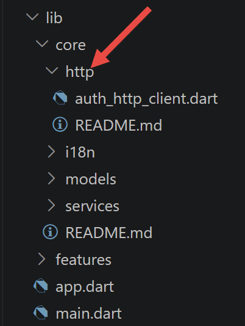
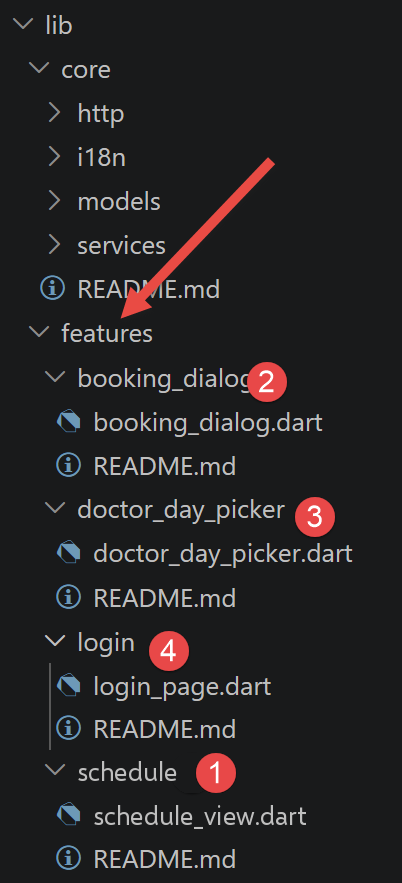
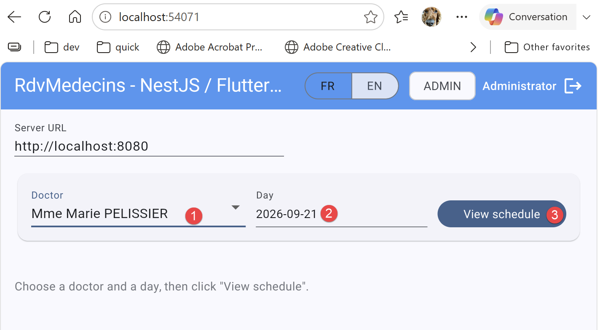

5. Hoofdstuk 4 - De Flutter-client voor de applicatie RdvMedecins
5.1. Overzicht van de architectuur

Deze client communiceert met de server [rdvmedecins-nestjs-server] van de cursus, die strikt ongewijzigd blijft, via dezelfde HTTP-routes die al zijn beschreven (POST [/login], GET [/getAllDoctors], GET [/getAllClients], GET [/getDoctorScheduleOfDay/:doctorId/:day], POST [/addAppointment], POST [/deleteAppointment]), met dezelfde JSON-envelop [{ status, data }] en dezelfde tokengebaseerde authenticatie met [JWT] (header [Authorization: Bearer <token>]). In deze variant krijgt de algehele architectuur een derde component: afhankelijk van het gekozen compilatiedoel (zie Hoofdstuk 5) voert niet langer alleen een browser de client uit, maar mogelijk een mobiel of desktopbesturingssysteem dat de gecompileerde [Dart]-code rechtstreeks uitvoert; de server [NestJS] verwerkt daarentegen nog steeds alleen dezelfde HTTP-verzoeken, ongeacht het doelplatform.
5.2. Mappenstructuur van het project

| rdvmedecins_flutter_client/
├── pubspec.yaml projectconfiguratie (afhankelijkheden, assets)
├── assets/
│ └── i18n/ vertaalwoordenboeken (fr.json, en.json)
└── lib/
├── main.dart startpunt (bouwt de services, stelt ze beschikbaar, start de app)
├── app.dart root widget (conductor + authentication guard)
├── core/
│ ├── models/ dataklassen (spiegel van de JSON die met de server wordt uitgewisseld)
│ ├── services/ SettingsService, AuthService, AppointmentService
│ ├── http/ AuthHttpClient (JWT-token + uitloggen bij 401)
│ └── i18n/ TranslationsService (Frans/Engels)
└── features/ één widget per functie, inclusief het inlogscherm
|
Deze mappenstructuur volgt, map voor map, die van de [Vue.js]-client uit deze cursus ([core/models], [core/composables] -> [core/services], [core/interceptors] -> [core/http], [features/] ongewijzigd): een bewuste keuze, want de organisatie van een applicatie is in de meeste gevallen niet specifiek voor een bepaald UI-framework.
5.3. Configuratiebestanden van het project
5.3.1. pubspec.yaml
| name: rdvmedecins_flutter_client
description: >
Flutter client (mobile, desktop and web from one and the same source code)
for the RdvMedecins application - NestJS / Flutter port of this course.
publish_to: 'none'
version: 1.0.0+1
environment:
sdk: '>=3.4.0 <4.0.0'
flutter: '>=3.24.0'
dependencies:
flutter:
sdk: flutter
# http: de officiële "low-level" HTTP-client van het Dart-ecosysteem - het
# strikte equivalent van de fetch() die aan de Vue.js-kant wordt gebruikt (auth.interceptor.ts,
# appointment.service.ts). Flutter heeft geen ingebouwde fetch() in de taal: deze
# bibliotheek neemt zijn plaats in.
http: ^1.2.2
# provider: de meest gangbare manier om een GEDEELDE toestand beschikbaar te stellen aan een hele
# Flutter-widgetboom - precies de rol die provide()/inject()
# aan de Vue.js-kant vervullen (settings.composable.ts, auth.composable.ts,
# language.composable.ts). Zie het hoofdstuk "Inleiding tot Flutter" voor
# de gedetailleerde overeenkomsten.
provider: ^6.1.2
# shared_preferences: een permanente key/value-opslag, die op DEZELFDE
# manier beschikbaar is op mobiel, desktop EN web - het platformonafhankelijke equivalent van
# localStorage (dat zelf alleen in een browser bestaat).
shared_preferences: ^2.3.2
# intl: datumopmaak (yyyy-MM-dd, zie DoctorDayPicker) - dezelfde
# rol als Date.toISOString().slice(0, 10) aan de Vue.js/TypeScript-kant, maar
# expliciet in plaats van een eenvoudige tekenreeksafsnijding.
intl: ^0.19.0
dev_dependencies:
flutter_test:
sdk: flutter
flutter_lints: ^4.0.0
flutter:
uses-material-design: true
# the translation dictionaries - the equivalent of public/i18n/*.json aan de
# Vue.js-kant, maar INGEBOUWD in het applicatiepakket in plaats van aangeboden
# door een webserver (zie Hoofdstuk "De applicatie porteren" voor de reden
# van dit verschil, dat juist de 3 doelomgevingen betreft).
assets:
- assets/i18n/
|
Laten we deze code toelichten:
- regels 9-10: [sdk: '>=3.4.0 <4.0.0'] / [flutter: '>=3.24.0'] is het equivalent van het veld [engines] van een [package.json] [Node.js]: het bereik van de versies van de taal [Dart] en de SDK [Flutter] die voor dit project vereist zijn.
- Regels 16-20, 22-27, 29-32, 34-37: de vier afhankelijkheden van deze client, elk ter plaatse geannoteerd met het equivalent in [Vue.js]; zie ook de paragraaf „Gebruikte tools” van de inleiding.
- regel 42: [flutter_lints: ^4.0.0], de [Dart]-tegenhanger van [ESLint]: een set stijl- en kwaliteitsregels die door [flutter analyze] worden gecontroleerd, die in eerdere webclients in deze cursus ontbrak maar automatisch werd gegenereerd door [flutter create].
- Regels 51-52: [assets: - assets/i18n/] declareert EXPLICIET dat alle inhoud van [assets/i18n/] in het applicatiepakket moet worden opgenomen; zonder deze declaratie zou [rootBundle.loadString(...)] (zie [core/i18n/translations_service.dart] hieronder) tijdens de uitvoering mislukken: een bestand dat op het moment van [flutter build] op schijf bestaat, wordt niet automatisch in het uiteindelijke pakket opgenomen, in tegenstelling tot [public/] bij [Vite]/[Vue.js], dat zonder voorafgaande declaratie ongewijzigd wordt geserveerd.
5.4. De applicatie starten

5.4.1. lib/main.dart
Port van [src/main.ts] (client [Vue.js]): bouwt de services van deze client, stelt ze via [provider] beschikbaar voor de hele widgetboom en start vervolgens de applicatie.
| // =========================================================================
// main.dart
// -------------------------------------------------------------------------
// Ingangspunt van de Flutter-client. Equivalent van src/main.ts aan de Vue.js-
// clientkant van deze cursus: dit bestand start de applicatie expliciet
// (hier runApp(...); aan de Vue.js-kant createApp(...).mount(...)) EN
// configureert deze.
//
// Vue.js configureert zijn applicatie met app.provide(key, value), rechtstreeks
// aangeroepen op de applicatie-instantie - Flutter/provider gebruikt
// een widget, MultiProvider, geplaatst aan de wortel van de boom (zie runApp(...)
// hieronder): elke ChangeNotifierProvider/Provider die erin zit, maakt
// een instantie beschikbaar voor de HELE deelboom die hij omvat, precies
// zoals app.provide(...) dat deed voor alle onderliggende componenten -
// hetzelfde idee, maar uitgedrukt als een WIDGET in plaats van als een imperatieve
// methodeaanroep, omdat ALLES in Flutter een widget is (ook
// de configuratie van een gedeelde toestand).
//
// De VOLGORDE van de constructies blijft van belang, om dezelfde redenen als
// aan de Vue.js-kant: AuthService(settings) heeft settings nodig, die al moeten bestaan
// (om apiBaseUrl te lezen); AppointmentService heeft authHttp EN settings nodig.
//
// BELANGRIJK VERSCHIL met Vue.js: createAuthStore(settings) en
// createLanguageStore() aan de Vue.js-kant lezen localStorage SYNCHROON
// tijdens hun constructie, nog vóór de eerste weergave. Hun
// Flutter-equivalenten (AuthService.init(), TranslationsService.init())
// zijn ASYNCHROON (zie hun respectieve bestanden): main() zelf moet
// daarom een async functie worden en op deze twee
// initialisaties WACHTEN (await) VÓÓR het aanroepen van runApp(...) - anders zou het eerste scherm
// dat verschijnt een eventueel al opgeslagen sessie of taal negeren,
// zolang shared_preferences nodig heeft om te antwoorden.
//
// Net als de Angular-, React- en Vue.js-clients van deze cursus (één pagina,
// geen routeringstabel) gebruikt deze Flutter-client ALLEEN de minimale
// navigatie van MaterialApp (onmisbaar voor showDialog(), zie
// features/booking_dialog/booking_dialog.dart): AppRoot (zie app.dart)
// toont ofwel het inlogscherm, ofwel de rest van de applicatie, afhankelijk van
// AuthService.isLoggedIn - een eenvoudige Dart if/else volstaat, een routeringspakket
// (go_router of een ander) zou niets hebben opgeleverd voor een applicatie
// met één enkel scherm.
// =========================================================================
import 'package:flutter/material.dart';
import 'package:provider/provider.dart';
import 'app.dart';
import 'core/http/auth_http_client.dart';
import 'core/i18n/translations_service.dart';
import 'core/services/auth_service.dart';
import 'core/services/appointment_service.dart';
import 'core/services/settings_service.dart';
Future<void> main() async {
// WidgetsFlutterBinding.ensureInitialized(): onmisbaar zodra men
// een Flutter-API aanroept VÓÓR runApp(...) (hier shared_preferences en
// rootBundle.loadString(...) in TranslationsService.init()) - zonder
// deze regel zouden die aanroepen bij het opstarten mislukken. Vue.js kent niets
// vergelijkbaars: de browser is altijd "gereed", ook voordat
// src/main.ts wordt uitgevoerd.
WidgetsFlutterBinding.ensureInitialized();
// 1. Eerst SettingsService: AuthService en AppointmentService hebben deze nodig
// (apiBaseUrl).
final settings = SettingsService();
// 2. AuthService: ontvangt settings rechtstreeks in zijn constructor, zoals
// createAuthStore(settingsStore) aan de Vue.js-kant - daarna herstelt init() een
// eventueel opgeslagen sessie (zie de kopcommentaar
// hierboven over het asynchrone karakter van deze stap).
final auth = AuthService(settings);
await auth.init();
// 3. de geauthenticeerde HTTP-laag, daarna de bedrijfsservice - beide
// HIER gebouwd, slechts één keer, in plaats van binnen een widget
// (waar ze bij elke weergave opnieuw zouden worden gebouwd): precies hetzelfde
// principe als createSettingsStore()/createAuthStore(...), die aan de Vue.js-kant slechts
// één keer vóór app.mount(...) worden aangeroepen.
final authHttp = AuthHttpClient(auth);
final api = AppointmentService(authHttp, settings);
// 4. TranslationsService: laadt het opstartwoordenboek (de
// opgeslagen taal, of standaard de taal van het apparaat) - GEEN volgorde-afhankelijkheid
// van de voorgaande stappen (anders dan
// createLanguageStore() aan de Vue.js-kant, dat op
// app.use(i18n) moest wachten: dit bestand implementeert alles zelf opnieuw, zie
// core/i18n/translations_service.dart, dus er hoeft geen externe
// plug-in te worden geïnstalleerd voordat men deze kan gebruiken).
final translations = TranslationsService();
await translations.init();
runApp(
// MultiProvider: bundelt meerdere providers in één widget,
// in plaats van ze met de hand te nesten (Provider(...) > Provider(...)
// > Provider(...) > ...) - een leesbaarheid die vergelijkbaar is met de reeks
// aanroepen "app.provide(SettingsKey, ...); app.provide(AuthKey, ...);
// app.provide(LanguageKey, ...);" aan de Vue.js-kant, ondanks het verschil
// in vorm (een lijst widgets in plaats van een reeks instructies).
MultiProvider(
providers: [
// .value(...) in plaats van Provider(create: ...): deze instanties
// bestaan al (hierboven gebouwd) - .value(...) stelt ze alleen
// beschikbaar voor de widgetboom, zonder
// nieuwe te bouwen. ChangeNotifierProvider abonneert zich bovendien
// op notifyListeners() en tekent automatisch elke
// widget opnieuw die context.watch<...>() op deze provider deed (zie
// lib/app.dart) - de rol die het "reactieve" karakter van een
// reactive(...) aan de Vue.js-kant speelt.
ChangeNotifierProvider.value(value: settings),
ChangeNotifierProvider.value(value: auth),
ChangeNotifierProvider.value(value: translations),
// AppointmentService is GEEN ChangeNotifier (niets in deze service
// verandert in de tijd zodra hij is gebouwd): een eenvoudige Provider
// volstaat, die deze instantie alleen beschikbaar stelt, zonder
// enig begrip van notificatie.
Provider.value(value: api),
],
child: const RdvMedecinsApp(),
),
);
}
|
Laten we deze code toelichten:
- regel 60: [WidgetsFlutterBinding.ensureInitialized();] is vereist telkens wanneer u een [Flutter]-API aanroept VÓÓR [runApp(...)] (hier [shared_preferences] en [rootBundle.loadString(...)]); zonder deze regel zouden deze aanroepen bij het opstarten mislukken; [Vue.js] hoeft hier niets van te anticiperen, omdat de browser altijd „gereed” is, zelfs voordat [src/main.ts] wordt uitgevoerd.
- Regels 70-71: [final auth = AuthService(settings); await auth.init();] is een GROOT VERSCHIL met [createAuthStore(settingsStore)] aan de kant van [Vue.js], dat [localStorage] SYNCHROON leest zodra het is gebouwd: [AuthService.init()] is expliciet [async], en [main()] moet daarom zelf ook async zijn om vóór [runApp(...)] te kunnen WACHTEN; anders zou het eerste scherm dat wordt getoond een al opgeslagen sessie negeren zolang [shared_preferences] nog niet heeft geantwoord.
- Regel 89: [await translations.init();] : dezelfde opmerking als hierboven, met betrekking tot de opgeslagen taal; anders dan [createLanguageStore()] bij [Vue.js], dat moest wachten op [app.use(i18n)], heeft deze stap geen sequentiële afhankelijkheid van de voorgaande: [TranslationsService] implementeert alles zelf, zonder dat er vooraf plug-ins van derden hoeven te worden geïnstalleerd.
- Regels 98-116: [MultiProvider(providers: [...], child: const RdvMedecinsApp())] is het equivalent, in de vorm van een WIDGET in plaats van imperatieve aanroepen, van de reeks [app.provide(SettingsKey, ...); app.provide(AuthKey, ...); app.provide(LanguageKey, ...);] aan de [Vue.js]-kant: elke [ChangeNotifierProvider.value(...)] stelt een vooraf gebouwde instantie beschikbaar voor de hele deelboom.
5.4.2. lib/app.dart
Port van [src/app/App.vue]: de ROOT-widget van de applicatie (opgebouwd door [lib/main.dart]), de „dirigent” die de bedrijfstoestand bijhoudt en reageert op acties van de widgets in [lib/features/], en de authenticatie-„guard”.
| // =========================================================================
// app.dart
// -------------------------------------------------------------------------
// Port van src/app/App.vue (Vue.js-client van deze cursus): de WORTEL-
// widget van de applicatie (gebouwd door lib/main.dart). Zoals in de
// drie andere varianten van deze cursus speelt deze de rol van
// "dirigent": hij bewaart de toestand van de applicatie (artsen, patiënten,
// getoonde agenda, laatst gezochte arts/dag...) en reageert op de acties
// van de "bedrijfswidgets" van lib/features/ om op het
// juiste moment de NestJS-server aan te roepen, via AppointmentService.
//
// Sinds authenticatie is toegevoegd, speelt deze widget ook de rol van
// "guard": zolang AuthService.isLoggedIn false is, toont hij alleen
// LoginPage (zie lib/features/login/); aangezien alle serverroutes
// worden beschermd door JwtAuthGuard, zou het sowieso nutteloos zijn (en een bron
// van 401-fouten) om artsen/patiënten/agenda te laden voordat men is ingelogd.
//
// Twee klassen, zoals in de andere "stateful" bestanden van deze client:
// RdvMedecinsApp (de MaterialApp - de ABSOLUTE wortel, zie lib/main.dart) en
// AppRoot/_AppRootState (het echte equivalent van App.vue, met alle toestand).
// =========================================================================
import 'package:flutter/material.dart';
import 'package:provider/provider.dart';
import 'core/i18n/translations_service.dart';
import 'core/models/appointment_models.dart';
import 'core/services/auth_service.dart';
import 'core/services/appointment_service.dart';
import 'core/services/settings_service.dart';
import 'features/schedule/schedule_view.dart';
import 'features/booking_dialog/booking_dialog.dart';
import 'features/doctor_day_picker/doctor_day_picker.dart';
import 'features/login/login_page.dart';
// -------------------------------------------------------------------------
// RdvMedecinsApp: de Flutter-wortel in strikte zin - MaterialApp levert
// het thema, de navigatie (Navigator, gebruikt door showDialog(), zie
// features/booking_dialog/booking_dialog.dart) en de systeemvertalingen
// (scrollen, dialoogvensters...). Het is, zeer ruwweg, het equivalent van wat index.html + de
// koppeling app.mount('#app') samen
// deden aan de Vue.js-kant (src/main.ts) - behalve dat deze
// "schil" hier zelf deel uitmaakt van de Dart-code van de applicatie, in plaats
// van van een apart HTML-bestand.
// -------------------------------------------------------------------------
class RdvMedecinsApp extends StatelessWidget {
const RdvMedecinsApp({super.key});
@override
Widget build(BuildContext context) {
return MaterialApp(
debugShowCheckedModeBanner: false,
// expliciet appBarTheme: het standaard Material 3-thema geeft
// AppBar een lichte achtergrond (colorScheme.surface) - om de
// blauwe balk met witte tekst van "navbar navbar-dark bg-primary" aan de
// Vue.js-kant terug te krijgen (zie App.vue), worden achtergrond en tekst hier expliciet ingesteld,
// in plaats van een tekstkleur vast te leggen op elke afzonderlijke
// Text() van AppRoot hieronder (zie auth.name, verderop) - één
// enkele bron van waarheid voor het uiterlijk van de balk.
theme: ThemeData(
colorSchemeSeed: Colors.blue,
useMaterial3: true,
appBarTheme: const AppBarTheme(
backgroundColor: Colors.blue,
foregroundColor: Colors.white,
),
),
home: const AppRoot(),
);
}
}
class AppRoot extends StatefulWidget {
const AppRoot({super.key});
@override
State<AppRoot> createState() => _AppRootState();
}
class _AppRootState extends State<AppRoot> {
// Toestand van de applicatie
// het directe equivalent van de ref(...) van App.vue, als eenvoudige
// veranderlijke velden van _AppRootState: setState(...) (zie de methoden
// hieronder) vervangt de automatische reactiviteit van Vue.js.
List<Doctor> _doctors = [];
List<Client> _clients = [];
DoctorDaySchedule? _schedule;
String? _error;
// de laatste zoekopdracht (arts + dag) wordt onthouden om de agenda
// te kunnen verversen na een reservering of een annulering - dezelfde
// rol als lastDoctorId/lastDay aan de Vue.js-kant.
int? _lastDoctorId;
String? _lastDay;
// permanent bewaarde verwijzing naar AuthService, om zich netjes
// te kunnen afmelden in dispose() (zie hieronder) - zie het
// commentaar van initState() hieronder voor de reden van deze keuze.
late final AuthService _auth;
@override
void initState() {
super.initState();
// context.read<AuthService>(): wanneer initState() wordt uitgevoerd, is de
// widget al correct in de boom ingevoegd (anders dan in de constructor, waar context nog niet kan worden
// gebruikt voor
// dependency injection) - maar context.watch(...) wordt hier NIET gebruikt:
// een StatefulWidget moet zich slechts één keer expliciet op een provider abonneren,
// nooit binnen initState() met watch()
// (dat een build context veronderstelt). De verwijzing wordt dus bewaard in
// een veld (_auth) en we abonneren ons zelf met addListener(...).
_auth = context.read<AuthService>();
_auth.addListener(_onAuthChange);
// equivalent van "watch(() => auth.isLoggedIn, ..., { immediate: true })"
// aan de Vue.js-kant: { immediate: true } voert de callback
// METEEN uit, zonder op een eerste wijziging te wachten - nuttig als er al een sessie
// was opgeslagen (zie AuthService.init(), afgewacht door
// lib/main.dart vóór runApp(...)). Vue.js biedt deze optie
// rechtstreeks aan; Flutter heeft geen ingebouwd equivalent mechanisme in
// addListener(...), dus hetzelfde effect wordt HANDMATIG nagebootst: een
// expliciete aanroep direct na het abonneren, naast het abonnement
// zelf.
if (_auth.isLoggedIn) {
_loadInitialLists();
}
}
@override
void dispose() {
// afmelden is hier ESSENTIEEL: zonder dit zou _onAuthChange
// blijven worden aangeroepen nadat deze widget is vernietigd (bijvoorbeeld
// tijdens een hot reload of een routewijziging), en
// zou dit een uitzondering veroorzaken bij de eerste setState(...) op een
// niet-gekoppelde widget. Vue.js kent niets vergelijkbaars om rekening mee te houden: watch(...) wordt
// automatisch "opgeruimd" wanneer de component die hem heeft aangemaakt wordt vernietigd.
_auth.removeListener(_onAuthChange);
super.dispose();
}
void _onAuthChange() {
if (_auth.isLoggedIn) {
_loadInitialLists();
}
}
// -----------------------------------------------------------------------
// wanneer we ingelogd raken (geslaagde login of sessie
// hersteld uit shared_preferences), worden de lijsten met artsen en patiënten
// eenmalig geladen.
// -----------------------------------------------------------------------
void _loadInitialLists() {
final api = context.read<AppointmentService>();
api.getAllDoctors().then((result) {
if (mounted) setState(() => _doctors = result);
}).catchError((Object err) {
if (mounted) setState(() => _error = err.toString());
});
api.getAllClients().then((result) {
if (mounted) setState(() => _clients = result);
}).catchError((Object err) {
if (mounted) setState(() => _error = err.toString());
});
}
// -----------------------------------------------------------------------
// reageert op de knop "Log out": wist de sessie EN de getoonde
// bedrijfstoestand - zonder dit zou een nieuwe gebruiker die daarna inlogt,
// kortstondig de agenda van de vorige zien.
// -----------------------------------------------------------------------
Future<void> _onLogout() async {
await _auth.logOut();
setState(() {
_doctors = [];
_clients = [];
_schedule = null;
_error = null;
_lastDoctorId = null;
_lastDay = null;
});
}
// -----------------------------------------------------------------------
// reageert op de aanroep van onSearch(...) door de widget DoctorDayPicker
// -----------------------------------------------------------------------
void _onSearchSchedule(int doctorId, String day) {
setState(() {
_error = null;
_lastDoctorId = doctorId;
_lastDay = day;
});
_loadSchedule();
}
// -----------------------------------------------------------------------
// reageert op de aanroep van onBook(...) door de widget ScheduleView: HIER wordt, anders dan bij
// Vue.js (dat alleen het venster opende
// en slotBeingBooked onthield), het dialoogvenster RECHTSTREEKS geopend
// met showDialog (via openBookingDialog(...)) en wordt op het resultaat
// GEWACHT - zie de kop van booking_dialog.dart voor de details van
// dit structurele verschil.
// -----------------------------------------------------------------------
Future<void> _onBookingRequest(SlotJson slot) async {
final lastDay = _lastDay;
if (lastDay == null) {
return;
}
final clientId = await openBookingDialog(context: context, slot: slot, clients: _clients);
if (clientId == null) {
return; // de gebruiker heeft het dialoogvenster gesloten zonder een patiënt te kiezen
}
try {
await context.read<AppointmentService>().addAppointment(lastDay, clientId, slot.id);
_loadSchedule(); // de agenda wordt ververst: het tijdslot verschijnt nu als gereserveerd
} catch (err) {
if (mounted) setState(() => _error = err.toString());
}
}
// -----------------------------------------------------------------------
// reageert op de aanroep van onCancel(...) door de widget ScheduleView
// -----------------------------------------------------------------------
Future<void> _onCancelAppointment(AppointmentJson appointment) async {
try {
await context.read<AppointmentService>().deleteAppointment(appointment.id);
_loadSchedule(); // de agenda wordt ververst: het tijdslot is weer vrij
} catch (err) {
if (mounted) setState(() => _error = err.toString());
}
}
void _loadSchedule() {
final doctorId = _lastDoctorId;
final day = _lastDay;
if (doctorId == null || day == null) {
return;
}
context.read<AppointmentService>().getDoctorScheduleOfDay(doctorId, day).then((result) {
if (mounted) setState(() => _schedule = result);
}).catchError((Object err) {
if (mounted) setState(() => _error = err.toString());
});
}
@override
Widget build(BuildContext context) {
// context.watch<...>() op de DRIE providers waarvan de weergave
// rechtstreeks afhangt: elke aanroep abonneert deze widget op de toekomstige wijzigingen van
// die provider - als een van hen een notificatie geeft (notifyListeners()), wordt build(...)
// automatisch opnieuw aangeroepen. Dit is het mechanisme dat hier de
// automatische reactiviteit van Vue.js vervangt, zoals genoemd in
// core/services/settings_service.dart.
final t = context.watch<TranslationsService>().t;
final language = context.watch<TranslationsService>();
final auth = context.watch<AuthService>();
final settings = context.watch<SettingsService>();
// smal scherm (telefoon in staande stand): de titelbalk wordt
// afgeslankt (zie actions: hieronder), bij gebrek aan ruimte om alles te tonen wat
// op een breed scherm gemakkelijk past.
final narrow = MediaQuery.sizeOf(context).width < 600;
return Scaffold(
appBar: AppBar(
title: Text(t('APP.TITLE')),
actions: [
// FR/EN-keuzeschakelaar: ALTIJD zichtbaar (ook op het
// inlogscherm) - de tegenhanger van de <div class="btn-group"> die altijd
// wordt getoond in App.vue.
SegmentedButton<String>(
segments: const [
ButtonSegment(value: 'fr', label: Text('FR')),
ButtonSegment(value: 'en', label: Text('EN')),
],
selected: {language.currentLanguage},
onSelectionChanged: (choice) => language.changeLanguage(choice.first),
showSelectedIcon: false,
),
const SizedBox(width: 12),
// de rolbadge + naam + uitlogknop worden daarentegen
// pas getoond zodra men is ingelogd (auth.isLoggedIn) - dezelfde
// voorwaarde als de <template v-if="auth.isLoggedIn"> van App.vue.
if (auth.isLoggedIn) ...[
Chip(label: Text(auth.role?.asString() ?? '')),
const SizedBox(width: 8),
// hier geen vastgelegde kleurstijl: deze Text() erft de
// witte foregroundColor die is ingesteld op appBarTheme (zie RdvMedecinsApp
// hierboven), precies zoals "navbar-dark" aan de Bootstrap-kant
// standaard al zijn inhoud wit kleurde.
// op een smal scherm wordt de naam verborgen: de rolbadge en de uitlogknop
// volstaan, en de titelbalk past binnen de breedte.
if (!narrow) Text(auth.name ?? ''),
IconButton(
tooltip: t('APP.LOGOUT'),
icon: const Icon(Icons.logout),
onPressed: _onLogout,
),
],
const SizedBox(width: 8),
],
),
body: SafeArea(
child: SingleChildScrollView(
padding: const EdgeInsets.all(16),
child: Column(
crossAxisAlignment: CrossAxisAlignment.start,
children: [
// server-URL: nuttig zowel vóór als na het
// inloggen - ondergebracht in een klein, speciale privéwidget, _ServerUrlField
// (zie hieronder), om de redenen die bij de
// definitie ervan worden uitgelegd.
ConstrainedBox(
constraints: const BoxConstraints(maxWidth: 320),
child: _ServerUrlField(settings: settings, label: t('APP.SERVER_URL_LABEL')),
),
const SizedBox(height: 16),
if (_error != null) ...[
Container(
width: double.infinity,
padding: const EdgeInsets.all(12),
decoration: BoxDecoration(
color: Theme.of(context).colorScheme.errorContainer,
borderRadius: BorderRadius.circular(4),
),
child: Text(
_error!,
style: TextStyle(color: Theme.of(context).colorScheme.onErrorContainer),
),
),
const SizedBox(height: 16),
],
// niet ingelogd: alleen het inlogscherm -
// het exacte equivalent van "<Login v-if="!auth.isLoggedIn" />"
// aan de Vue.js-kant.
if (!auth.isLoggedIn)
const LoginPage()
else ...[
// widget 1: keuze van de arts en de dag
DoctorDayPicker(doctors: _doctors, onSearch: _onSearchSchedule),
const SizedBox(height: 16),
// widget 2: weergave van de agenda - canEdit verbergt
// "Book"/"Cancel" voor de rol USER
ScheduleView(
schedule: _schedule,
canEdit: auth.isAdmin,
onBook: _onBookingRequest,
onCancel: _onCancelAppointment,
),
],
],
),
),
),
);
}
}
// -------------------------------------------------------------------------
// _ServerUrlField: een klein PRIVÉ StatefulWidget voor het veld "Server
// URL". Aan de Vue.js-kant past dit veld op één regel, rechtstreeks
// in de <template> van App.vue (<input v-model="settings.apiBaseUrl">):
// v-model zelf regelt, achter de schermen, de synchronisatie tussen het
// getoonde veld en settings.apiBaseUrl. Flutter heeft geen ingebouwde tweerichtingsbinding
// in TextField (zie al lib/features/login/login_page.dart):
// het neemt een TextEditingController, en dus een eigenaar die deze kan aanmaken
// en vrijgeven (initState/dispose) - een BEWERKBARE TEKST gebonden aan een
// provider kan in Flutter NIET een eenvoudige StatelessWidget zijn, anders dan
// een gelijkwaardig Vue.js-veld, dat geen aparte
// "component" nodig heeft om te bestaan.
// -------------------------------------------------------------------------
class _ServerUrlField extends StatefulWidget {
final SettingsService settings;
final String label;
const _ServerUrlField({required this.settings, required this.label});
@override
State<_ServerUrlField> createState() => _ServerUrlFieldState();
}
class _ServerUrlFieldState extends State<_ServerUrlField> {
late final TextEditingController _controller;
@override
void initState() {
super.initState();
_controller = TextEditingController(text: widget.settings.apiBaseUrl);
}
@override
void dispose() {
_controller.dispose();
super.dispose();
}
@override
Widget build(BuildContext context) {
return TextField(
controller: _controller,
decoration: InputDecoration(labelText: widget.label, isDense: true),
// onChanged in plaats van onSubmitted: elke toetsaanslag wordt
// onmiddellijk doorgegeven aan SettingsService, precies zoals
// v-model dat aan de Vue.js-kant doet voor elk getypt teken (niet alleen
// bij het verzenden van het formulier).
onChanged: widget.settings.setApiBaseUrl,
);
}
}
|
Laten we deze code toelichten:
- regels 46-71: [class RdvMedecinsApp extends StatelessWidget] is de root van [Flutter] in strikte zin: [MaterialApp] levert het thema en de navigatie (essentieel voor [showDialog(...)], zie [booking_dialog.dart] hieronder), ongeveer gelijkwaardig aan wat [index.html] + [app.mount('#app')] samen deden aan de [Vue.js]-kant.
- regels 60-66: [appBarTheme: const AppBarTheme(backgroundColor: Colors.blue, foregroundColor: Colors.white)] bootst het uiterlijk van ["navbar navbar-dark bg-primary"] ([Bootstrap], zie [App.vue]) na: een standaard [Material 3]-thema zou [AppBar] een lichte achtergrond geven, dus moet dit expliciet worden ingesteld om de vertrouwde blauwe balk met witte tekst te herstellen.
- regels 96-127: [initState()] bootst HANDMATIG het equivalent na van [watch(() => auth.isLoggedIn, ..., { immediate: true })] aan de [Vue.js]-kant (zie [App.vue]): [Flutter] heeft de optie [immediate] niet ingebouwd in [addListener(...)], dus u moet zich abonneren EN DAN eenmalig expliciet de huidige status controleren: twee stappen waar [Vue.js] er maar één nodig heeft.
- Regels 129–139: [dispose() { _auth.removeListener(_onAuthChange); }] — ONMISBAAR: zonder deze afmelding [_onAuthChange] zou na het vernietigen van de widget nog steeds worden aangeroepen en zou de eerste aanroep van [setState(...)] op een ontmantelde widget een uitzondering veroorzaken. [Vue.js] kent niets vergelijkbaars om rekening mee te houden, want [watch(...)] wordt automatisch “opgeruimd” zodra de component die het heeft aangemaakt wordt vernietigd.
- Regels 203–218: [_onBookingRequest(...)] — HIER zit het meest zichtbare structurele verschil van dit hele client: in plaats van een “venster” te openen door een Booleaanse toestand op te slaan (zie [slotBeingBooked] aan de kant van [Vue.js]), wacht deze widget rechtstreeks met [await] op het resultaat van [openBookingDialog(...)]; zie de volledige toelichting in [booking_dialog.dart], verderop in dit hoofdstuk.
- Regels 253–256: vier keer [context.watch<...>()] aan het begin van [build(...)]: deze widget tekent zichzelf automatisch opnieuw zodra een van deze vier services (ÉÉN willekeurige) een wijziging meldt ([notifyListeners()]), precies de rol die de automatische reactiviteit van [Vue.js] vervult voor [auth], [settings] en [language] in [App.vue].
- Regels 260 en 291: [MediaQuery.sizeOf(context).width < 600] — de breedte van het scherm (of venster) wordt gebruikt om de titelbalk lichter te maken op een telefoon in portretstand: de naam van de gebruiker wordt verborgen ([if (!narrow) Text(...)], een eenvoudige [if] in Dart midden in een lijst widgets), terwijl de rolbadge en de uitlogknop zichtbaar blijven. Op regel 276 verwijdert [showSelectedIcon: false] het vinkje dat [SegmentedButton] toevoegt aan de geselecteerde optie en dat de [FR]/[EN]-keuze onnodig verbreedde. Zonder deze twee aanpassingen zijn de [actions:]-elementen van de [AppBar] breder dan een telefoon in portretstand.
- Regels 359–409: [class _ServerUrlField] — een kleine PRIVE-[StatefulWidget] die aan het veld “server-URL” is gewijd. Net als bij [Vue.js] paste dit veld op één regel ([<input v-model="settings.apiBaseUrl">]): [Flutter] heeft geen ingebouwde tweerichtingskoppeling met [TextField], dus is een [TextEditingController] nodig, samen met een eigenaar die deze kan aanmaken en vrijgeven: een bewerkbare tekst die aan een provider is gekoppeld, kan niet zomaar een [StatelessWidget] in [Flutter] zijn.
5.5. De laag core/models

5.5.1. lib/core/models/appointment_models.dart
Port van [core/models/appointment.models.ts], zelf letterlijk overgenomen uit de clients [Angular] en [React]: de klassen die het formaat beschrijven van de JSON-gegevens die met de server worden uitgewisseld, zonder afhankelijkheden van [Flutter], dus “zuiver” [Dart].
| // =========================================================================
// core/models/appointment_models.dart
// -------------------------------------------------------------------------
// Port van core/models/appointment.models.ts (Vue.js-client van deze cursus), zelf
// ongewijzigd overgenomen uit de Angular- en React-clients: de Dart-klassen die
// de vorm beschrijven van de JSON-gegevens die van de NestJS-server worden ontvangen. Net als hun
// TypeScript-tegenhangers zijn deze klassen van geen enkel UI-framework afhankelijk
// (hier geen Flutter-import) - dit is "pure" Dart, zoals
// appointment.models.ts "pure" TypeScript was.
//
// STRUCTUREEL VERSCHIL met TypeScript: een TypeScript-"interface" is
// slechts een beschrijving van een VORM, die alleen bij het compileren wordt gecontroleerd -
// tijdens de uitvoering wordt een gedecodeerd JSON-object (JSON.parse) ZOALS HET IS gebruikt,
// zonder conversie, en TypeScript "vertrouwt" de ontwikkelaar (zie de
// "as ServerResponse<T>" van appointment.service.ts). Dart kent zo'n begrip van impliciete
// structurele typering niet: jsonDecode(...) geeft altijd dynamische
// typen terug (Map<String, dynamic>, List<dynamic>...), die
// expliciet moeten worden omgezet naar instanties van Dart-klassen via een
// fromJson(...)-constructor - aanwezig op ELKE van de onderstaande klassen. Het is
// omslachtiger om eenmalig te schrijven, maar de conversie wordt tijdens de uitvoering gecontroleerd
// (een ontbrekende sleutel of een sleutel van het verkeerde type werpt direct een expliciete
// uitzondering), terwijl een foute TypeScript-typering onopgemerkt kan blijven.
// =========================================================================
// -------------------------------------------------------------------------
// envelop die alle serverantwoorden gemeen hebben (zie ServerResponse<T> aan de
// NestJS-kant, en de interface ServerResponse<T> van de Vue.js-client).
//
// Dart generaliseert ook met punthaken (<T>), precies zoals
// TypeScript - het grote verschil is dat hier een eenvoudige "as T" niet
// volstaat om het veld [data] om te zetten: de functie die weet hoe een T
// uit de ruwe JSON moet worden opgebouwd, moet worden meegegeven (de parameter [parseData]
// hieronder), omdat Dart T tijdens de uitvoering niet kent
// (type-erasure verhindert dat men "T.fromJson(...)"
// rechtstreeks schrijft).
// -------------------------------------------------------------------------
class ServerResponse<T> {
final int status; // 0 = geslaagd, al het andere = mislukt (zie ResponseStatus aan de serverkant)
final T? data;
ServerResponse({required this.status, required this.data});
factory ServerResponse.fromJson(
Map<String, dynamic> json,
T Function(dynamic rawData) parseData,
) {
final rawData = json['data'];
return ServerResponse<T>(
status: json['status'] as int,
data: rawData == null ? null : parseData(rawData),
);
}
}
class Doctor {
final int id;
final String title;
final String lastName;
final String firstName;
Doctor({required this.id, required this.title, required this.lastName, required this.firstName});
factory Doctor.fromJson(Map<String, dynamic> json) => Doctor(
id: json['id'] as int,
title: json['title'] as String,
lastName: json['lastName'] as String,
firstName: json['firstName'] as String,
);
}
// [Client] betekent hier een PATIËNT van de medische praktijk (vocabulaire van het
// bedrijfsdomein, overgenomen uit het oorspronkelijke document) - niet te verwarren met
// "HTTP-client", noch met deze Flutter-client zelf!
class Client {
final int id;
final String title;
final String lastName;
final String firstName;
Client({required this.id, required this.title, required this.lastName, required this.firstName});
factory Client.fromJson(Map<String, dynamic> json) => Client(
id: json['id'] as int,
title: json['title'] as String,
lastName: json['lastName'] as String,
firstName: json['firstName'] as String,
);
}
// "lichte" vorm van een tijdslot, zoals teruggegeven door de server
// (zie getMapForSlot aan de NestJS-kant): alleen de velden die nuttig zijn voor de weergave.
class SlotJson {
final int id;
final int startHour;
final int startMinute;
final int endHour;
final int endMinute;
SlotJson({
required this.id,
required this.startHour,
required this.startMinute,
required this.endHour,
required this.endMinute,
});
factory SlotJson.fromJson(Map<String, dynamic> json) => SlotJson(
id: json['id'] as int,
startHour: json['startHour'] as int,
startMinute: json['startMinute'] as int,
endHour: json['endHour'] as int,
endMinute: json['endMinute'] as int,
);
}
// "lichte" vorm van een afspraak (zie getMapForAppointment aan de NestJS-kant)
class AppointmentJson {
final int id;
final String day; // formaat "yyyy-MM-dd"
final Client? client;
final SlotJson? slot;
AppointmentJson({required this.id, required this.day, required this.client, required this.slot});
factory AppointmentJson.fromJson(Map<String, dynamic> json) => AppointmentJson(
id: json['id'] as int,
day: json['day'] as String,
client: json['client'] == null ? null : Client.fromJson(json['client'] as Map<String, dynamic>),
slot: json['slot'] == null ? null : SlotJson.fromJson(json['slot'] as Map<String, dynamic>),
);
}
// een tijdslot van de agenda van een arts, vrij (appointment == null) of gereserveerd
class DoctorDaySlot {
final SlotJson slot;
final AppointmentJson? appointment;
DoctorDaySlot({required this.slot, required this.appointment});
factory DoctorDaySlot.fromJson(Map<String, dynamic> json) => DoctorDaySlot(
slot: SlotJson.fromJson(json['slot'] as Map<String, dynamic>),
appointment: json['appointment'] == null ? null : AppointmentJson.fromJson(json['appointment'] as Map<String, dynamic>),
);
}
// de volledige agenda van een arts voor een bepaalde dag (zie GET /getDoctorScheduleOfDay/:doctorId/:day)
class DoctorDaySchedule {
final Doctor doctor;
final String day;
final List<DoctorDaySlot> slots;
DoctorDaySchedule({required this.doctor, required this.day, required this.slots});
factory DoctorDaySchedule.fromJson(Map<String, dynamic> json) => DoctorDaySchedule(
doctor: Doctor.fromJson(json['doctor'] as Map<String, dynamic>),
day: json['day'] as String,
slots: (json['slots'] as List<dynamic>)
.map((e) => DoctorDaySlot.fromJson(e as Map<String, dynamic>))
.toList(),
);
}
// -------------------------------------------------------------------------
// authenticatie (zie server: src/auth/, met name login-result.model.ts)
// -------------------------------------------------------------------------
// de enige twee rollen die de applicatie kent - exacte kopie van het
// type [Role] van de server (src/entities/user.entity.ts). Waar TypeScript het doet
// met een unie van strings ('ADMIN' | 'USER'), kent Dart een
// echt begrip van opsomming (enum): veiliger (het is onmogelijk om per
// vergissing een andere Role dan deze twee waarden aan te maken), ten koste van een kleine expliciete
// heen-en-weer-conversie met de JSON-string ("ADMIN"/"USER") via
// fromString(...)/asString() hieronder - een TypeScript-"type Role =
// 'ADMIN' | 'USER'" heeft helemaal geen conversie nodig, een JSON-string IS
// voor dat type al een geldige waarde.
enum Role {
admin,
user;
static Role fromString(String value) {
switch (value) {
case 'ADMIN':
return Role.admin;
case 'USER':
return Role.user;
default:
throw ArgumentError('Unknown role: $value');
}
}
String asString() => this == Role.admin ? 'ADMIN' : 'USER';
}
// vorm van de gegevens die POST /login teruggeeft (in de gebruikelijke envelop ServerResponse<T>)
class LoginResult {
final String accessToken;
final String login;
final String name;
final Role role;
LoginResult({required this.accessToken, required this.login, required this.name, required this.role});
factory LoginResult.fromJson(Map<String, dynamic> json) => LoginResult(
accessToken: json['accessToken'] as String,
login: json['login'] as String,
name: json['name'] as String,
role: Role.fromString(json['role'] as String),
);
}
|
Laten we deze code toelichten:
- Regels 11–22: de koptekst met commentaar beschrijft het belangrijkste structurele verschil in dit bestand: een [interface] [TypeScript] wordt alleen tijdens het COMPILEREN gecontroleerd; [Dart] BEHOUDT zijn typen tijdens runtime, vandaar een expliciete constructor [fromJson(...)] in elke klasse (afwezig in [appointment.models.ts]).
- Regels 37–53: [class ServerResponse<T>] en de bijbehorende factory [fromJson(json, parseData)]: ontvangt een FUNCTIE ([parseData]) in plaats van te vertrouwen op een eenvoudige [as ServerResponse<T>] zoals aan de [TypeScript]-kant (zie [appointment.service.ts]): [Dart] kent [T] tijdens runtime niet (type erasure), dus kan het niet zelf [T.fromJson(...)] schrijven.
- Regels 71–73: het commentaar merkt op dat [Client] verwijst naar een PATIËNT van de medische praktijk (vakjargon van het bedrijfsdomein), niet te verwechselen met de “HTTP-client”, noch met deze [Flutter]-client zelf, een dubbelzinnigheid die al is opgemerkt in de drie voorgaande webvarianten.
- regels 176–192: [enum Role { admin, user; ... }] — vervangt de [TypeScript]-stringunion [type Role = 'ADMIN' | 'USER'] door een ECHTE [Dart]-enumeratie, met een expliciete heen-en-weerconversie naar de JSON-string ([fromString]/[asString]); dat is veiliger (het is onmogelijk een ongeldige [Role] te genereren), ten koste van een conversie die een stringunion niet nodig heeft.
5.6. De laag core/services

5.6.1. lib/core/services/settings_service.dart
Port van [core/composables/settings.composable.ts]: houdt de URL van de [NestJS]-server in het geheugen.
| // =========================================================================
// core/services/settings_service.dart
// -------------------------------------------------------------------------
// Port van core/composables/settings.composable.ts (Vue.js-client van deze
// cursus): een kleine "store" die de URL van de NestJS-server
// in het geheugen bewaart.
//
// Vue.js stelt deze gedeelde toestand beschikbaar via het paar [provide]/[inject]: een
// object [reactive(...)] dat slechts één keer wordt gemaakt en daarna ter plekke wordt gelezen/gewijzigd
// door elke onderliggende component. Flutter heeft noch [reactive], noch
// [provide]/[inject]: het standaardequivalent van het ecosysteem (en het equivalent dat
// in deze cursus wordt gebruikt) is een ChangeNotifier - een gewone Dart-klasse
// die, naast zijn velden, zijn luisteraars weet te WAARSCHUWEN
// telkens wanneer een wijziging een nieuwe weergave moet veroorzaken, via
// de expliciete aanroep notifyListeners().
//
// Het wezenlijke verschil met Vue.js: [reactive(...)] verpakt het object
// in een JavaScript-proxy die elke schrijfactie op een eigenschap AUTOMATISCH detecteert
// (store.apiBaseUrl = ... tekent de componenten die
// apiBaseUrl lezen vanzelf opnieuw). Een Dart ChangeNotifier detecteert daarentegen NIETS
// uit zichzelf: de ontwikkelaar moet na elke
// wijziging notifyListeners() aanroepen - iets meer discipline met de hand, in ruil voor een
// veel eenvoudiger mechanisme (geen proxy, geen "magie") dat makkelijker te
// begrijpen en te debuggen is.
//
// Het is het pakket [provider] (zie pubspec.yaml en lib/main.dart) dat vervolgens
// rond deze ChangeNotifier de rol van app.provide(...) aan de
// Vue.js-kant vervult: het stelt deze ene instantie beschikbaar aan de hele widget-deelboom,
// via context.watch<SettingsService>() (om te "lezen en zich opnieuw
// te abonneren op wijzigingen", zie lib/app.dart) of context.read<...>()
// (om "eenmalig te lezen, zonder zich opnieuw te abonneren").
// =========================================================================
import 'package:flutter/foundation.dart';
class SettingsService extends ChangeNotifier {
String _apiBaseUrl = 'http://localhost:8080';
String get apiBaseUrl => _apiBaseUrl;
// equivalent van "setApiBaseUrl(url: string)" aan de Vue.js-kant - anders dan
// store.apiBaseUrl = url (een eenvoudige toewijzing, voldoende dankzij de
// reactieve proxy), moeten de luisteraars hier na het wijzigen van het
// privéveld expliciet worden gewaarschuwd.
void setApiBaseUrl(String url) {
if (url == _apiBaseUrl) {
return; // voorkomt een nutteloze hertekening als de waarde niet echt is gewijzigd
}
_apiBaseUrl = url;
notifyListeners();
}
}
|
Laten we deze code toelichten:
- regels 36–39: [class SettingsService extends ChangeNotifier] met een PRIVÉVELD ([_apiBaseUrl]) en een publieke accessor ([get apiBaseUrl]): een [ChangeNotifier] is een GEWONE [Dart]-klasse, zonder proxy zoals [reactive(...)] aan de [Vue.js]-kant: niets detecteert automatisch het lezen of schrijven van een eigenschap.
- Regels 45–51: [setApiBaseUrl(url)] roept expliciet [notifyListeners()] aan NADAT het veld is bijgewerkt — de handmatige stap die [store.apiBaseUrl = url] aan de [Vue.js]-kant niet hoefde uit te voeren, omdat de reactieve proxy dit zelf afhandelt.
5.6.2. lib/core/services/auth_service.dart
Port van [core/composables/auth.composable.ts]: beheert de aanmelding (POST [/login]), houdt het [JWT]-token bij en zorgt dat het een herstart overleeft via [shared_preferences].
| // =========================================================================
// core/services/auth_service.dart
// -------------------------------------------------------------------------
// Port van core/composables/auth.composable.ts (Vue.js-client van deze
// cursus): regelt het inloggen van de gebruiker, roept POST /login aan, bewaart
// het ontvangen JWT-token (en de identiteit/rol die erbij hoort), en laat het
// een herstart van de applicatie overleven dankzij shared_preferences -
// het platformonafhankelijke equivalent van localStorage (zie hieronder).
//
// Net als aan de Vue.js-kant is dit, samen met
// core/services/appointment_service.dart, de enige andere plaats in de applicatie die HTTP met de server spreekt - een
// bewuste uitzondering op de regel "één enkele plaats die HTTP spreekt", die
// aan de clientkant de scheiding weerspiegelt die al aan de serverkant is gemaakt tussen
// RdvMedecinsController (bedrijfslogica) en AuthController (authenticatie).
//
// BELANGRIJK VERSCHIL met Vue.js: readStoredSession() (aan de Vue.js-kant)
// is SYNCHROON - localStorage.getItem(...) geeft zijn waarde
// onmiddellijk terug, nog vóór de eerste weergave van de applicatie. shared_
// preferences is daarentegen ALTIJD asynchroon (SharedPreferences.getInstance()
// geeft een Future terug), ook op platformen waar de onderliggende opslag
// in feite een lokaal bestand is dat vrijwel direct wordt gelezen: de Dart-API
// maakt geen onderscheid tussen deze gevallen, omwille van de consistentie op ALLE platformen (op
// het web steunt dezelfde aanroep op window.localStorage, maar de Dart-API
// blijft asynchroon om identiek te blijven aan de andere doelen). Concreet
// gevolg: men kan niet meer, zoals aan de Vue.js-kant, de al opgeslagen sessie lezen
// VOORDAT de widgetboom is gekoppeld - er is een [init()] nodig
// die expliciet asynchroon is, aangeroepen (en AFGEWACHT met await) vanuit
// lib/main.dart vóór runApp(...), om te voorkomen dat het inlogscherm een fractie van een seconde
// "flikkert" voordat de sessie is hersteld.
// =========================================================================
import 'dart:convert';
import 'package:flutter/foundation.dart';
import 'package:http/http.dart' as http;
import 'package:shared_preferences/shared_preferences.dart';
import '../models/appointment_models.dart';
import 'settings_service.dart';
const String _storageKey = 'rdvmedecins.session';
class AuthService extends ChangeNotifier {
// ontvangen in de constructor in plaats van via Flutter-injectie verkregen: in dit
// stadium (zie lib/main.dart) bestaat er nog geen widget, dus iets
// als context.read<SettingsService>() zou niet mogelijk zijn - precies
// dezelfde reden als die welke is gedocumenteerd in createAuthStore(settings) aan de
// Vue.js-kant (src/main.ts), dat settingsStore ook als functieparameter ontvangt
// in plaats van via inject().
final SettingsService settings;
AuthService(this.settings);
bool isLoggedIn = false;
String? login;
String? name;
Role? role;
String? accessToken;
bool get isAdmin => role == Role.admin;
// -----------------------------------------------------------------------
// slechts ÉÉN keer aan te roepen, in lib/main.dart, VÓÓR runApp(...): leest
// een sessie die mogelijk al bij een eerdere start van
// de applicatie is opgeslagen opnieuw in - equivalent van readStoredSession() aan de Vue.js-kant, maar
// expliciet asynchroon (zie de kop van dit bestand) in plaats van aangeroepen
// in de constructor van de store zelf.
// -----------------------------------------------------------------------
Future<void> init() async {
try {
final prefs = await SharedPreferences.getInstance();
final raw = prefs.getString(_storageKey);
if (raw == null) {
return; // geen opgeslagen sessie: we blijven "niet ingelogd", met de standaardwaarden hierboven
}
final session = jsonDecode(raw) as Map<String, dynamic>;
_applyLocalSession(
accessToken: session['accessToken'] as String,
login: session['login'] as String,
name: session['name'] as String,
role: Role.fromString(session['role'] as String),
);
} catch (_) {
// shared_preferences kan onbeschikbaar zijn of een beschadigde
// waarde bevatten - in dat geval beschouwen we, zoals aan de Vue.js-kant (try/catch van
// readStoredSession()), eenvoudigweg dat er geen
// sessie is, in plaats van het opstarten van de applicatie te laten crashen.
}
// hier geen notifyListeners(): init() wordt afgewacht vóór
// runApp(...) in lib/main.dart, dus er luistert nog geen enkele widget naar deze
// ChangeNotifier wanneer deze methode wordt uitgevoerd - waarschuwen
// zou nutteloos zijn (en zou zelfs een uitzondering werpen, aangezien een Flutter-ChangeNotifier
// in sommige debugconfiguraties notifyListeners() verbiedt zolang er niet minstens één
// luisteraar is).
}
// -----------------------------------------------------------------------
// equivalent van: POST /login JSON-body { login, password }
// -----------------------------------------------------------------------
Future<LoginResult> logIn(String login, String password) async {
final httpResponse = await http.post(
Uri.parse('${settings.apiBaseUrl}/login'),
headers: {'Content-Type': 'application/json'},
body: jsonEncode({'login': login, 'password': password}),
);
final envelope = ServerResponse<LoginResult>.fromJson(
jsonDecode(httpResponse.body) as Map<String, dynamic>,
(data) => LoginResult.fromJson(data as Map<String, dynamic>),
);
if (envelope.status != 0 || envelope.data == null) {
throw Exception('Login failed');
}
final result = envelope.data!;
await _applySessionAndPersist(result);
return result;
}
// -----------------------------------------------------------------------
// logout: puur lokaal (geen serveraanroep - een JWT-token wordt in deze port aan de serverkant niet
// "ingetrokken", het verloopt vanzelf na
// JWT_EXPIRES_IN, zie server .env). Aangeroepen zowel door een klik op
// "Log out" (zie lib/app.dart) als door core/http/auth_http_client.dart
// wanneer een beschermd verzoek een 401 ontvangt.
// -----------------------------------------------------------------------
Future<void> logOut() async {
login = null;
name = null;
role = null;
accessToken = null;
isLoggedIn = false;
notifyListeners();
try {
final prefs = await SharedPreferences.getInstance();
await prefs.remove(_storageKey);
} catch (_) {
// ook hier mag een mislukte wisbewerking van de opslag het
// uitloggen aan de applicatiekant, dat hierboven al is doorgevoerd, niet verhinderen.
}
}
// werkt de reactieve velden bij ZONDER de opslag aan te raken - gebruikt door
// init() (die de opslag zojuist heeft GELEZEN, dus niet opnieuw hoeft te schrijven).
void _applyLocalSession({
required String accessToken,
required String login,
required String name,
required Role role,
}) {
this.accessToken = accessToken;
this.login = login;
this.name = name;
this.role = role;
isLoggedIn = true;
}
// werkt de reactieve velden bij EN bewaart de sessie - gebruikt door
// logIn() hierboven. Bundelt wat applySession(...)
// aan de Vue.js-kant in één blok deed (reactieve toestand + localStorage samen
// geschreven); hier zijn de twee bewerkingen gescheiden omdat het schrijven
// asynchroon is (await prefs.setString(...)), terwijl het bijwerken
// van de velden METEEN en synchroon moet gebeuren
// (notifyListeners() moet op de toewijzing van de velden volgen zonder te wachten op
// schijf-I/O) - het omkeren van de volgorde zou het verversen
// van de interface nodeloos vertragen.
Future<void> _applySessionAndPersist(LoginResult result) async {
_applyLocalSession(
accessToken: result.accessToken,
login: result.login,
name: result.name,
role: result.role,
);
notifyListeners();
try {
final prefs = await SharedPreferences.getInstance();
await prefs.setString(
_storageKey,
jsonEncode({
'accessToken': result.accessToken,
'login': result.login,
'name': result.name,
'role': result.role.asString(),
}),
);
} catch (_) {
// de sessie blijft IN HET GEHEUGEN geldig voor deze uitvoering van
// de applicatie, ook als het bewaren mislukt (quotum overschreden,
// alleen-lezen opslag...) - alleen een toekomstige herstart van
// de applicatie zou hier hinder van ondervinden (de gebruiker zou opnieuw moeten inloggen).
}
}
}
|
Laten we deze code toelichten:
- regels 16–29: de koptekst met commentaar beschrijft het belangrijkste verschil in dit bestand: [readStoredSession()] is aan de [Vue.js]-kant SYNCHROON; [shared_preferences] is ALTIJD asynchroon, ongeacht het platform, vandaar een expliciete [async] [init()], waarop [lib/main.dart] wacht met await VOORDAT [runApp(...)] wordt aangeroepen.
- regels 69–95: [Future<void> init() async { ... }] — leest een eventueel opgeslagen sessie, beschermd door een [try/catch]; dezelfde voorzorgsmaatregel als de [try/catch] van [readStoredSession()] aan de [Vue.js]-kant (opslag niet beschikbaar of waarde beschadigd).
- regels 100–116: [logIn(login, password)] — roept POST [/login] aan met het pakket [http] (het equivalent van [fetch]) en genereert bij een mislukking een standaard [Dart]-uitzondering ([throw Exception(...)]), die later wordt opgevangen door een [try/catch] [Dart], net zoals de [throw new Error(...)] uit [auth.composable.ts] werd opgevangen door een [.catch(...)] [JavaScript].
- regels 165–190: [_applySessionAndPersist(...)] — werkt de velden bij EN roept [notifyListeners()] aan VOORDAT er wordt geschreven naar [shared_preferences]: de volgorde is bewust gekozen, want de interface moet ONMIDDELLIJK worden vernieuwd zonder te wachten op een asynchrone schijfschrijfactie, terwijl [applySession(...)] aan de [Vue.js]-kant beide bewerkingen in één synchrone instructie uitvoerde.
5.6.3. lib/core/services/appointment_service.dart
Port van [core/services/appointment.service.ts]: de vijf aanroepen van de bedrijfslogica naar de server, gebouwd bovenop [core/http/auth_http_client.dart] (hieronder) in plaats van rechtstreeks op het pakket [http].
| // =========================================================================
// core/services/appointment_service.dart
// -------------------------------------------------------------------------
// Port van core/services/appointment.service.ts (Vue.js-client van deze cursus): de
// laag [Services] van de Flutter-client - de ENIGE plaats in de applicatie
// (samen met core/services/auth_service.dart voor het inloggen zelf) die
// HTTP spreekt met de NestJS-server.
//
// Vue.js stelt deze service beschikbaar als COMPOSABLE (useAppointmentService()), zelf
// gebouwd op twee andere composables (useAuthFetch(), useSettings()).
// Omdat Flutter/Dart noch composables noch dependency injection in de taal
// ingebouwd hebben, wordt dit bestand weer een gewone KLASSE, slechts één keer
// gebouwd in lib/main.dart met zijn twee afhankelijkheden doorgegeven aan de
// constructor - precies hetzelfde principe als core/http/auth_http_client.dart,
// en de meest directe manier om "een reeks functies die
// van iets anders afhangen" te porteren wanneer de doeltaal geen composables biedt.
// =========================================================================
import 'dart:convert';
import 'package:http/http.dart' as http;
import '../http/auth_http_client.dart';
import '../models/appointment_models.dart';
import 'settings_service.dart';
class AppointmentService {
final AuthHttpClient authHttp;
final SettingsService settings;
AppointmentService(this.authHttp, this.settings);
// -----------------------------------------------------------------------
// gemeenschappelijke privéfunctie: alle serverantwoorden hebben de vorm
// { status, data } (zie core/models/appointment_models.dart). De regel
// "als status != 0, is het een fout" wordt HIER gecentraliseerd, slechts één keer, in plaats
// van herhaald in elk van de onderstaande methoden - precies de
// rol van extract<T>(...) aan de Vue.js-kant.
//
// [parseData] is hetzelfde soort parameter als die al voorkwam
// in ServerResponse.fromJson(...) (zie appointment_models.dart): de functie die weet hoe een T
// uit de ruwe JSON van het veld [data] moet worden opgebouwd, aangezien Dart
// dit niet zelf kan (geen generieke "T.fromJson(...)").
// -----------------------------------------------------------------------
T _extract<T>(http.Response httpResponse, T Function(dynamic rawData) parseData) {
final envelope = ServerResponse<T>.fromJson(
jsonDecode(httpResponse.body) as Map<String, dynamic>,
parseData,
);
if (envelope.status != 0) {
// de "bedrijfsfout" van de server wordt omgezet in een klassieke
// Dart-uitzondering, die de aanroepende widgets kunnen opvangen met een
// eenvoudige try/catch (zie lib/app.dart) - precies zoals de
// "throw new Error(...)" van appointment.service.ts, opgevangen door de
// .catch(...) van src/app/App.vue.
throw Exception('The server responded with error status ${envelope.status}');
}
return envelope.data as T;
}
// -----------------------------------------------------------------------
// equivalent van: GET /getAllDoctors
// -----------------------------------------------------------------------
Future<List<Doctor>> getAllDoctors() async {
final httpResponse = await authHttp.get(Uri.parse('${settings.apiBaseUrl}/getAllDoctors'));
return _extract<List<Doctor>>(
httpResponse,
(data) => (data as List<dynamic>).map((e) => Doctor.fromJson(e as Map<String, dynamic>)).toList(),
);
}
// -----------------------------------------------------------------------
// equivalent van: GET /getAllClients
// -----------------------------------------------------------------------
Future<List<Client>> getAllClients() async {
final httpResponse = await authHttp.get(Uri.parse('${settings.apiBaseUrl}/getAllClients'));
return _extract<List<Client>>(
httpResponse,
(data) => (data as List<dynamic>).map((e) => Client.fromJson(e as Map<String, dynamic>)).toList(),
);
}
// -----------------------------------------------------------------------
// equivalent van: GET /getDoctorScheduleOfDay/{doctorId}/{day}
// -----------------------------------------------------------------------
Future<DoctorDaySchedule> getDoctorScheduleOfDay(int doctorId, String day) async {
final httpResponse = await authHttp.get(
Uri.parse('${settings.apiBaseUrl}/getDoctorScheduleOfDay/$doctorId/$day'),
);
return _extract<DoctorDaySchedule>(
httpResponse,
(data) => DoctorDaySchedule.fromJson(data as Map<String, dynamic>),
);
}
// -----------------------------------------------------------------------
// equivalent van: POST /addAppointment JSON-body { day, clientId, slotId }
// -----------------------------------------------------------------------
Future<AppointmentJson> addAppointment(String day, int clientId, int slotId) async {
final httpResponse = await authHttp.post(
Uri.parse('${settings.apiBaseUrl}/addAppointment'),
body: jsonEncode({'day': day, 'clientId': clientId, 'slotId': slotId}),
);
return _extract<AppointmentJson>(httpResponse, (data) => AppointmentJson.fromJson(data as Map<String, dynamic>));
}
// -----------------------------------------------------------------------
// equivalent van: POST /deleteAppointment JSON-body { appointmentId }
// -----------------------------------------------------------------------
Future<void> deleteAppointment(int appointmentId) async {
final httpResponse = await authHttp.post(
Uri.parse('${settings.apiBaseUrl}/deleteAppointment'),
body: jsonEncode({'appointmentId': appointmentId}),
);
_extract<Object?>(httpResponse, (data) => data);
}
}
|
Laten we deze code toelichten:
- regels 27–31: [class AppointmentService { final AuthHttpClient authHttp; final SettingsService settings; AppointmentService(this.authHttp, this.settings); }] — keert terug naar een GEWONE KLASSE, eenmalig aangemaakt in [lib/main.dart] met de afhankelijkheden als argumenten van de constructor, terwijl [Vue.js] een COMPOSABLE gebruikte, [useAppointmentService()], die zelf was opgebouwd uit twee andere composables.
- Regels 45–59: [T _extract<T>(httpResponse, parseData)]— brengt de regel “als [status != 0], is het een fout” op één plek samen, precies de rol van [extract<T>(...)] aan de [Vue.js]-kant; de parameter [parseData] is dezelfde soort functie als die al voorkwam in [ServerResponse.fromJson(...)].
- Regels 99–105: [addAppointment(day, clientId, slotId)] — [jsonEncode({...})] bouwt de JSON-body van het POST-verzoek, het [Dart]-equivalent van [JSON.stringify({...})] aan de [Vue.js]-kant.
- Regels 110–116: [Future<void> deleteAppointment(int appointmentId) async { ... }] — roept [_extract<Object?>(...)] aan zonder het resultaat te gebruiken: de server geeft [ServerResponse.ok(null)] terug voor deze route, dus er valt niets specifiekers te typeren; dezelfde keuze als [extract<null>(httpResponse)] aan de [Vue.js]-kant.
5.7. De laag core/http

5.7.1. lib/core/http/auth_http_client.dart
Port van [core/interceptors/auth.interceptor.ts]: voegt het [JWT]-token toe aan elk beschermd verzoek en logt de gebruiker uit bij een 401-antwoord.
| // =========================================================================
// core/http/auth_http_client.dart
// -------------------------------------------------------------------------
// Port van core/interceptors/auth.interceptor.ts (Vue.js-client van deze
// cursus). Dit bestand doet twee dingen, precies zoals zijn
// Vue.js-tegenhanger (zelf een port van de Angular- en React-clients):
// 1. voegt de header "Authorization: Bearer <token>" toe aan elk verzoek, als
// de gebruiker is ingelogd (zie AuthService.accessToken);
// 2. als de server met 401 antwoordt (token ontbreekt, is ongeldig of verlopen),
// meldt de gebruiker aan de clientkant netjes af.
//
// [fetch] (gebruikt aan de Vue.js- en React-kant) en Angulars [HttpClient] hebben
// in Dart GEEN DIRECT equivalent: het pakket [http] (zie pubspec.yaml)
// levert losse functies (http.get(...), http.post(...)) in plaats
// van een object dat globaal kan worden onderschept. De port blijft desalniettemin getrouw
// in GEEST aan useAuthFetch(): in plaats van een composable functie die
// een "verbeterde fetch" teruggeeft, wordt hier een ECHTE KLASSE geschreven, [AuthHttpClient],
// waarvan de methoden get(...)/post(...) precies dezelfde rol spelen -
// alle code die met de server wil praten (hier alleen
// core/services/appointment_service.dart) roept DEZE methoden aan in plaats van het
// pakket http rechtstreeks.
//
// Een klasse schrijven in plaats van een composable functie is een natuurlijke
// keuze in Dart/Flutter: anders dan een Vue.js-<script setup> (dat
// slechts één keer per componentinstantie wordt uitgevoerd, zie het commentaar van
// auth.interceptor.ts), heeft een ChangeNotifier of een Dart-serviceklasse
// geen "bij elke weergave uitgevoerde body" om op te letten -
// dus ook hier is geen equivalent van useCallback() nodig,
// maar om een andere reden: er is simpelweg geen
// functie die "bij elke weergave opnieuw wordt aangemaakt", aangezien de klasse
// slechts één keer door lib/main.dart wordt gebouwd (zie hieronder).
// =========================================================================
import 'dart:async' show unawaited;
import 'package:http/http.dart' as http;
import '../services/auth_service.dart';
class AuthHttpClient {
final AuthService auth;
final http.Client _client = http.Client();
AuthHttpClient(this.auth);
Future<http.Response> get(Uri url) => _send(() => _client.get(url, headers: _headers()));
Future<http.Response> post(Uri url, {required Object body}) => _send(
() => _client.post(
url,
headers: {..._headers(), 'Content-Type': 'application/json'},
body: body,
),
);
// bouwt de headers die alle beschermde verzoeken gemeen hebben - het equivalent
// van de "new Headers(options.headers); if (auth.accessToken) {...}" aan de
// Vue.js-kant, maar als een eenvoudige Map<String, String> (het type
// dat het pakket http verwacht, hier eenvoudiger dan een klasse Headers).
Map<String, String> _headers() {
final accessToken = auth.accessToken;
return accessToken == null ? {} : {'Authorization': 'Bearer $accessToken'};
}
// brengt onder één noemer wat get(...) en post(...) gemeen hebben: de HTTP-aanroep
// uitvoeren en vervolgens, bij een 401-antwoord, de gebruiker afmelden - de
// als parameter ontvangen functie [call] speelt de rol van de "...options"
// die fetch(path, { ...options, headers }) aan de
// Vue.js-kant doorgeeft: op dit punt weten we nog niet of het een GET
// of een POST is, alleen dat de aanroep moet worden uitgevoerd en het antwoord onderzocht.
Future<http.Response> _send(Future<http.Response> Function() call) async {
final response = await call();
// een 401 tijdens een sessie betekent dat het token niet meer geldig is
// (verlopen, of server herstart): de client wordt netjes afgemeld
// in plaats van de applicatie in een inconsistente toestand te laten (ogenschijnlijk
// ingelogd, maar zonder dat nog een verzoek slaagt). Er is
// geen "await" op logOut(): het HTTP-antwoord (ook een foutantwoord)
// moet aan de aanroeper worden teruggegeven zonder te wachten op het einde van het wissen van
// de lokale opslag, dat aan zijn kant op de achtergrond wordt voltooid.
if (response.statusCode == 401) {
unawaited(auth.logOut());
}
return response;
}
}
|
Laten we deze code toelichten:
- Regels 12–31: de koptekst met commentaar legt de keuze voor een KLASSE ([AuthHttpClient]) uit boven een composable: [fetch] ([Vue.js]/[React]) en [HttpClient] ([Angular]) hebben geen rechtstreeks equivalent in [Dart]; het pakket [http] biedt losse functies in plaats van één object dat globaal kan worden onderschept.
- regels 46–54: [get(...)]/[post(...)]: de enige twee methoden die [appointment_service.dart] aanroept; het roept het pakket [http] nooit rechtstreeks aan.
- Regels 60–63: [_headers()] — bouwt [{'Authorization': 'Bearer $accessToken'}] als de gebruiker is aangemeld; dit is het equivalent van [new Headers(options.headers); if (auth.accessToken) {...}] aan de [Vue.js]-kant, maar dan in de vorm van een eenvoudige [Map<String, String>].
- Regels 71–84: [_send(call)] — brengt samen wat [get(...)] en [post(...)] gemeen hebben; [unawaited(auth.logOut())] legt EXPLICIET vast dat we ervoor kiezen niet te wachten op de [Future]: het HTTP-antwoord (ook als het een fout bevat) moet aan de aanroeper worden teruggegeven zonder te wachten tot het wissen van de lokale opslag is voltooid.
5.8. De laag core/i18n

5.8.1. lib/core/i18n/translations_service.dart
SAMENGEVOEGDE port van [src/i18n.ts] EN van [core/composables/language.composable.ts]: het omschakelen van de interface tussen Frans en Engels, opnieuw geïmplementeerd zonder bibliotheek van derden (zie de koptekst met commentaar in het bestand voor de reden van deze keuze).
| // =========================================================================
// core/i18n/translations_service.dart
// -------------------------------------------------------------------------
// SAMENGEVOEGDE port van src/i18n.ts (vue-i18n-configuratie) EN van
// core/composables/language.composable.ts (Vue.js-client van deze cursus).
// Vue.js scheidt de twee omdat vue-i18n, een externe bibliotheek die al
// rijk is aan functies (meervoudsvormen, datum-/getalnotaties...),
// al het eigenlijke vertaalwerk doet; language.composable.ts
// voegt daaraan alleen de opslag van de taalkeuze in
// localStorage toe. Flutter heeft geen direct equivalent van vue-i18n/react-
// i18next/@ngx-translate/core dat standaard is geïnstalleerd: in plaats van een
// extra afhankelijkheid toe te voegen, implementeert dit bestand in een paar
// regels precies de deelverzameling die deze cursus gebruikt - een
// woordenboek met punt-sleutels ("LOGIN.TITLE") en een functie t(key).
//
// BELANGRIJK PLATFORMVERSCHIL (zie ook Hoofdstuk "De applicatie porteren
// naar mobiel, desktop en web"): src/i18n.ts haalt
// elk woordenboek op met een fetch("/i18n/{language}.json") - een relatieve
// URL, die uitgaat van een WEBSERVER die de bestanden van de client aanbiedt
// (Vite in ontwikkeling, een statische server na het bouwen). Een
// mobiele of desktop-Flutter-applicatie heeft GEEN WEBSERVER die haar aanbiedt
// : de code EN de statische bronnen (hier de JSON-bestanden) zijn samen
// INGEBOUWD in één pakket dat op het apparaat wordt geïnstalleerd (.apk,
// .app, .exe...). Daarom gebruikt dit bestand rootBundle.loadString(...)
// - de Flutter-API die een bestand dat in de sectie [assets] van
// pubspec.yaml is gedeclareerd rechtstreeks uit dit pakket leest - in plaats van een netwerkaanroep.
// Op het webdoel steunt rootBundle achter de schermen op een echt HTTP-verzoek
// naar de bestanden die naast de applicatie worden gepubliceerd, maar dit detail
// blijft hier onzichtbaar: DEZELFDE Dart-code werkt, zonder enige platformvoorwaarde,
// in de 3 omgevingen - precies het centrale argument van
// dit hoofdstuk.
// =========================================================================
import 'dart:convert';
import 'package:flutter/foundation.dart';
import 'package:flutter/services.dart' show rootBundle, ServicesBinding;
import 'package:shared_preferences/shared_preferences.dart';
const String _storageKey = 'rdvmedecins.language';
final String _defaultLanguage = ServicesBinding.instance.platformDispatcher.locale.languageCode == 'fr' ? 'fr' : 'en';
class TranslationsService extends ChangeNotifier {
String currentLanguage = _defaultLanguage;
// reeds geladen woordenboeken (voorkomt dat een al eerder gezien assetbestand opnieuw wordt gelezen
// tijdens de sessie) - dezelfde optimalisatie als loadedDictionaries aan de
// Vue.js-kant (src/i18n.ts), maar hier wordt het gedecodeerde woordenboek zelf bewaard
// in plaats van een eenvoudige Set van reeds geziene talen: Vue.js kon volstaan
// met een Set omdat vue-i18n ZELF de geladen woordenboeken
// in het geheugen houdt (setLocaleMessage); omdat er hier geen equivalente
// bibliotheek is, moet deze cachetaak rechtstreeks door dit
// bestand worden vervuld.
final Map<String, Map<String, dynamic>> _dictionaries = {};
// -----------------------------------------------------------------------
// slechts ÉÉN keer aan te roepen, in lib/main.dart, VÓÓR runApp(...):
// herstelt de taal die bij een eerdere start is opgeslagen (als die
// er is) en laadt het bijbehorende woordenboek - equivalent van het laatste blok van
// createLanguageStore() aan de Vue.js-kant (het lezen van savedLanguage in
// localStorage), maar expliciet asynchroon gemaakt om dezelfde
// redenen die al zijn gedocumenteerd in core/services/auth_service.dart
// (shared_preferences is ALTIJD asynchroon, anders dan
// localStorage).
// -----------------------------------------------------------------------
Future<void> init() async {
String startLanguage = _defaultLanguage;
try {
final prefs = await SharedPreferences.getInstance();
startLanguage = prefs.getString(_storageKey) ?? _defaultLanguage;
} catch (_) {
// geen leesbare voorkeur: starten in de standaardtaal (Engels, of
// Frans op een Frans apparaat), zoals aan de Vue.js-kant.
}
await _loadDictionary(startLanguage);
currentLanguage = startLanguage;
// hier geen notifyListeners(), om dezelfde reden als in
// AuthService.init(): deze methode wordt afgewacht vóór
// runApp(...), dus er luistert nog geen enkele widget naar deze ChangeNotifier.
}
// -----------------------------------------------------------------------
// equivalent van: changeLanguage(language) aan de Vue.js-kant (geactiveerd door de
// FR/EN-knoppen van lib/app.dart, zie verderop in dit hoofdstuk).
// -----------------------------------------------------------------------
Future<void> changeLanguage(String language) async {
if (language == currentLanguage) {
return;
}
await _loadDictionary(language);
currentLanguage = language;
notifyListeners(); // hier daarentegen draait de applicatie al: we waarschuwen wel
try {
final prefs = await SharedPreferences.getInstance();
await prefs.setString(_storageKey, language);
} catch (_) {
// de taalwijziging blijft voor deze uitvoering van kracht, ook als het
// opslaan ervan mislukt - alleen een toekomstige herstart zou hier hinder van ondervinden.
}
}
// -----------------------------------------------------------------------
// equivalent van: loadDictionary(language) aan de Vue.js-kant - hetzelfde
// cachingprincipe (loadedDictionaries), maar het lezen van een ingebouwd
// assetbestand in plaats van een netwerk-fetch() (zie de kop van dit bestand).
// -----------------------------------------------------------------------
Future<void> _loadDictionary(String language) async {
if (_dictionaries.containsKey(language)) {
return; // al geladen tijdens een eerdere taalwijziging
}
final content = await rootBundle.loadString('assets/i18n/$language.json');
_dictionaries[language] = jsonDecode(content) as Map<String, dynamic>;
}
// -----------------------------------------------------------------------
// de vertaalfunctie zelf - aangeroepen als t('LOGIN.TITLE') vanuit
// de widgets (zie lib/features/...), precies zoals t('LOGIN.TITLE')
// aan de Vue.js-kant (useI18n().t). De sleutel bevat punten (een punt scheidt
// elk niveau): we dalen dus één segment tegelijk af in het geneste
// JSON-woordenboek, in plaats van het woordenboek eenmaal voor
// altijd plat te maken zoals vue-i18n intern doet - een keuze die
// ruimschoots volstaat voor de omvang van deze twee woordenboeken.
// -----------------------------------------------------------------------
String t(String key) {
final dictionary = _dictionaries[currentLanguage];
if (dictionary == null) {
return key; // woordenboek nog niet geladen: de sleutel zelf wordt getoond, als laatste redmiddel
}
dynamic currentValue = dictionary;
for (final segment in key.split('.')) {
if (currentValue is Map<String, dynamic> && currentValue.containsKey(segment)) {
currentValue = currentValue[segment];
} else {
return key; // sleutel niet gevonden: dezelfde terugvaloptie als hierboven
}
}
return currentValue is String ? currentValue : key;
}
}
|
Laten we deze code toelichten:
- Regels 16–31: de koptekst met commentaar beschrijft het belangrijkste PLATFORMVERSCHIL van dit hele client: [src/i18n.ts] haalt elk woordenboek op via [fetch("/i18n/{language}.json")], een URL die op een WEBSERVER berust; een mobiele of desktopapplicatie heeft er geen, vandaar [rootBundle.loadString(...)] in plaats van een netwerkaanroep; dezelfde code werkt, ongeacht het platform, in alle drie de omgevingen (zie hoofdstuk 5).
- regels 66–80: [init()] — herstelt de opgeslagen taal (of de standaardtaal: Engels, of Frans op een Franstalig apparaat) en laadt het bijbehorende woordenboek; net als [AuthService.init()] is hier geen [notifyListeners()] nodig (op dit moment luistert geen enkele widget naar deze [ChangeNotifier]).
- regels 107–113: [_loadDictionary(language)] — hetzelfde cacheprincipe als [loadedDictionaries] aan de [Vue.js]-kant, maar het slaat rechtstreeks het gedecodeerde woordenboek op in plaats van een eenvoudige [Set] van eerder geziene talen: [vue-i18n] hield de woordenboeken in het geheugen ([setLocaleMessage]); hier moet dit bestand deze cacherol zelf vervullen.
- Regels 124–138: [String t(String key) { ... }] — doorloopt het geneste JSON-woordenboek segment voor segment ([key.split('.')]), in plaats van het woordenboek eenmalig af te vlakken zoals [vue-i18n] intern doet; een keuze die ruim volstaat voor de omvang van deze twee woordenboeken.
5.8.2. assets/i18n/fr.json en assets/i18n/en.json
Ongewijzigd overgenomen uit [public/i18n/fr.json]/[en.json] (client [Vue.js]), met slechts één wijziging: de sleutel [APP.TITLE] verwijst nu naar “[Flutter]” in plaats van naar “[Vue.js]”. Beide bestanden moeten structureel identiek blijven (dezelfde sleutels, in beide talen); zo bestaat een sleutel gegarandeerd in beide woordenboeken.
5.9. De laag features

Eén widget per functie: het aanmeldscherm, de keuze van een arts en een dag, de weergave van de agenda en het dialoogvenster voor het reserveren van een afspraak.
5.9.1. lib/features/login/login_page.dart
Port van [src/app/features/login/Login.vue]: het aanmeldscherm.
| // =========================================================================
// features/login/login_page.dart
// -------------------------------------------------------------------------
// Port van src/app/features/login/Login.vue (Vue.js-client van deze cursus):
// het inlogscherm. Net als zijn Vue.js-tegenhanger weet deze widget
// niets van de agenda of de afspraken: hij verzamelt alleen een
// paar (login, password), geeft dit door aan AuthService.logIn(...),
// en toont een eventuele fout.
//
// STRUCTUREEL VERSCHIL met Vue.js: Login.vue declareert zijn lokale toestand
// (login, password, submitting, error) met eenvoudige ref(...) - Vue.js
// tekent dan automatisch de <template> opnieuw wanneer een van deze refs
// wijzigt, ZONDER enig begrip van "widget met of zonder toestand". Flutter onderscheidt
// expliciet twee soorten widgets: StatelessWidget (niets verandert ooit
// na de constructie) en StatefulWidget (bezit een veranderlijke toestand
// en weet zichzelf opnieuw te tekenen via setState(...)). Deze component moet
// onthouden wat de gebruiker typt EN weten hoe hij zichzelf opnieuw tekent wanneer
// submitting/error wijzigen: het is dus een StatefulWidget - de
// klasse LoginPage hieronder declareert ALLEEN createState(), alle toestand en
// alle logica zitten in _LoginPageState, de bijbehorende
// "tweelingklasse".
// =========================================================================
import 'package:flutter/material.dart';
import 'package:provider/provider.dart';
import '../../core/i18n/translations_service.dart';
import '../../core/services/auth_service.dart';
class LoginPage extends StatelessWidget {
const LoginPage({super.key});
@override
Widget build(BuildContext context) {
return const _LoginForm();
}
}
class _LoginForm extends StatefulWidget {
const _LoginForm();
@override
State<_LoginForm> createState() => _LoginFormState();
}
class _LoginFormState extends State<_LoginForm> {
// TextEditingController: anders dan v-model="login" aan de Vue.js-kant
// (dat een veld in één enkel attribuut rechtstreeks, in beide richtingen, aan een ref
// bindt), heeft Flutter geen ingebouwde tweerichtingsbinding in
// de widget TextField - men moet expliciet een controller bezitten,
// deze lezen (controller.text) en VRIJGEVEN (dispose()) zodra de widget
// wordt vernietigd, zie dispose() hieronder. Het is omslachtiger om eenmalig te schrijven,
// maar maakt een levenscyclus expliciet (aanmaken -> lezen -> vrijgeven
// van middelen) die Vue.js achter de schermen zelf beheert voor een ref.
final TextEditingController _loginController = TextEditingController();
final TextEditingController _passwordController = TextEditingController();
bool _submitting = false;
String? _error;
@override
void dispose() {
// geeft de aan de controllers gekoppelde middelen vrij - als dit wordt vergeten,
// ontstaat een geheugenlek telkens wanneer dit scherm
// opnieuw werd aangemaakt. Vue.js, waarvan de ref()'s eenvoudige JavaScript-objecten zijn
// die door de garbage collector worden opgeruimd zoals elk ander object,
// kent zo'n stap niet.
_loginController.dispose();
_passwordController.dispose();
super.dispose();
}
Future<void> _onSubmit() async {
final login = _loginController.text.trim();
final password = _passwordController.text;
if (login.isEmpty || password.isEmpty) {
return;
}
setState(() {
_error = null;
_submitting = true;
});
try {
// context.read<AuthService>(): een "eenmalige" lezing, ZONDER zich opnieuw te abonneren
// op toekomstige wijzigingen (anders dan context.watch<...>(), zie
// lib/app.dart) - precies geschikt voor een eenmalige aanroep die door
// een gebruikersactie wordt geactiveerd, en niet voor een weergave die
// actueel moet blijven. Het is het Flutter/provider-equivalent van
// "const auth = useAuth();" aan de Vue.js-kant, waar auth.logIn(...)
// eenvoudig wordt aangeroepen zonder enig bijzonder onderscheid (Vue.js kent dit
// onderscheid tussen eenmalig lezen en opnieuw abonneren niet: useAuth() geeft altijd
// hetzelfde reactieve object terug, welk gebruik men er ook van maakt).
await context.read<AuthService>().logIn(login, password);
if (!mounted) return; // de widget kan zijn vernietigd terwijl op de server werd gewacht
setState(() => _submitting = false);
} catch (_) {
if (!mounted) return;
setState(() {
_submitting = false;
_error = 'LOGIN.ERROR';
});
}
}
@override
Widget build(BuildContext context) {
// context.watch<TranslationsService>(): anders dan
// context.read<AuthService>() dat in _onSubmit() hierboven wordt gebruikt, willen
// we HIER dat deze widget zichzelf automatisch opnieuw tekent als de taal
// wijzigt (FR/EN-knoppen van lib/app.dart) - watch() abonneert op
// toekomstige wijzigingen, waar read() alleen eenmalig leest.
final t = context.watch<TranslationsService>().t;
return Center(
child: ConstrainedBox(
constraints: const BoxConstraints(maxWidth: 420),
child: Card(
child: Padding(
padding: const EdgeInsets.all(24),
// Form groepeert de velden en maakt verzenden mogelijk door op
// "Enter" te drukken vanuit elk ervan (onFieldSubmitted
// hieronder) - het equivalent van de <form @submit.prevent="onSubmit">
// van Login.vue: Enter in een veld EN een klik op de knop
// activeren beide dezelfde onSubmit().
child: Column(
mainAxisSize: MainAxisSize.min,
crossAxisAlignment: CrossAxisAlignment.stretch,
children: [
Text(t('LOGIN.TITLE'), style: Theme.of(context).textTheme.titleLarge),
const SizedBox(height: 16),
if (_error != null) ...[
Container(
padding: const EdgeInsets.all(8),
decoration: BoxDecoration(
color: Theme.of(context).colorScheme.errorContainer,
borderRadius: BorderRadius.circular(4),
),
child: Text(
t(_error!),
style: TextStyle(color: Theme.of(context).colorScheme.onErrorContainer),
),
),
const SizedBox(height: 16),
],
TextField(
controller: _loginController,
decoration: InputDecoration(labelText: t('LOGIN.LOGIN_LABEL')),
textInputAction: TextInputAction.next,
),
const SizedBox(height: 12),
TextField(
controller: _passwordController,
decoration: InputDecoration(labelText: t('LOGIN.PASSWORD_LABEL')),
obscureText: true,
textInputAction: TextInputAction.done,
// onSubmitted: geactiveerd door de toets "Enter" (of het equivalent ervan op het
// virtuele mobiele toetsenbord) - de tegenhanger van
// @submit.prevent op de tag <form> aan de Vue.js-kant,
// hier rechtstreeks op het LAATSTE veld van het formulier geplaatst.
onSubmitted: (_) => _onSubmit(),
),
const SizedBox(height: 20),
FilledButton(
onPressed: _submitting ? null : _onSubmit,
child: Text(_submitting ? t('LOGIN.SUBMITTING') : t('LOGIN.SUBMIT')),
),
const SizedBox(height: 16),
Text(
'${t('LOGIN.DEMO_ACCOUNTS_PREFIX')} admin / admin ${t('LOGIN.DEMO_ACCOUNTS_ADMIN')} '
'${t('LOGIN.DEMO_ACCOUNTS_OR')} user / user ${t('LOGIN.DEMO_ACCOUNTS_USER')}.',
style: Theme.of(context).textTheme.bodySmall,
),
],
),
),
),
),
);
}
}
|
Laten we deze code toelichten:
- regels 39–44: [LoginPage] (een eenvoudige [StatelessWidget]-frontend) delegeert ALLES aan [_LoginForm]/[_LoginFormState] ; de koptekst met commentaar legt uit waarom dit scherm, dat moet onthouden wat de gebruiker typt EN zichzelf opnieuw moet tekenen wanneer [_submitting]/[_error] veranderen, NIET simpelweg een [StatelessWidget] kan zijn, anders dan [Login.vue], waar [ref(...)] geen enkel onderscheid van dien aard maakt.
- regels 55–56: [final TextEditingController _loginController = TextEditingController();] — vervangt [v-model="login"]: geen ingebouwde tweerichtingskoppeling in [TextField]; er moet expliciet een controller worden opgegeven.
- regels 61–71: [dispose() { _loginController.dispose(); _passwordController.dispose(); ... }] — geeft beide controllers vrij; een omissie hier zou elke keer dat dit scherm opnieuw wordt aangemaakt een geheugenlek veroorzaken, een stap waarmee [Vue.js] geen rekening hoeft te houden (de [ref()]-objecten worden eenvoudig door de garbage collector opgeruimd).
- regels 93–102: [await context.read<AuthService>().logIn(login, password);] binnen een [try/catch] — [context.read<...>()] (eenmalige lezing, ZONDER opnieuw te abonneren) in plaats van [context.watch<...>()] (zie [lib/app.dart]), wat zeer geschikt is voor een eenmalige aanroep die door een gebruikersactie wordt veroorzaakt.
- Regel 160: [onSubmitted: (_) => _onSubmit(),] geplaatst op het LAATSTE veld (wachtwoord): het tegenstuk van [@submit.prevent="onSubmit"], dat aan de [Vue.js]-kant op de tag [<form>] staat: Zowel Enter indrukken in het veld als op de knop klikken activeert dezelfde [_onSubmit()].
5.9.2. lib/features/doctor_day_picker/doctor_day_picker.dart
Port van [src/app/features/doctor-day-picker/DoctorDayPicker.vue]: kies een arts en een datum en vraag vervolgens om de agenda weer te geven.
| // =========================================================================
// features/doctor_day_picker/doctor_day_picker.dart
// -------------------------------------------------------------------------
// Port van src/app/features/doctor-day-picker/DoctorDayPicker.vue (Vue.js-client
// van deze cursus): de widget waarmee een arts en een
// dag worden gekozen om vervolgens hun agenda op te vragen.
//
// Een Vue.js-[defineProps]/[defineEmits] (props als invoer, gebeurtenissen als
// uitvoer) wordt hier, heel direct, een Dart-CONSTRUCTOR: de props
// zijn de benoemde parameters van de constructor (doctors, onSearch), en
// "een gebeurtenis uitzenden" wordt simpelweg het AANROEPEN van de als
// parameter ontvangen functie - precies de keuze die de React-client van deze
// cursus al maakte (een functieprop, onSearch), in plaats van de expliciete
// declaratie [defineEmits] die specifiek is voor Vue.js. Flutter maakt, net als React,
// GEEN syntactisch onderscheid tussen een "gewone prop" en een "prop om de
// ouder te waarschuwen": het is een functie als elke andere, doorgegeven door de
// ouder (zie lib/app.dart) bij het bouwen van deze widget.
// =========================================================================
import 'package:flutter/material.dart';
import 'package:intl/intl.dart';
import 'package:provider/provider.dart';
import '../../core/i18n/translations_service.dart';
import '../../core/models/appointment_models.dart';
// formaat "yyyy-MM-dd" - hetzelfde datumformaat als aan de Vue.js-kant
// (new Date().toISOString().slice(0, 10)), maar hier expliciet opgebouwd via het pakket intl
// in plaats van met tekenreeksafsnijding: de DateTime van Dart
// heeft geen ingebouwde methode toISOString().
final DateFormat _dayFormat = DateFormat('yyyy-MM-dd');
class DoctorDayPicker extends StatefulWidget {
final List<Doctor> doctors;
// onSearch(doctorId, day): het directe equivalent van
// "search: [criteria: { doctorId: number; day: string }]" aan de
// Vue.js-kant - hier twee positionele parameters in plaats van één enkel object
// {doctorId, day}, een keuze die in Dart even geldig is als de andere.
final void Function(int doctorId, String day) onSearch;
const DoctorDayPicker({super.key, required this.doctors, required this.onSearch});
@override
State<DoctorDayPicker> createState() => _DoctorDayPickerState();
}
class _DoctorDayPickerState extends State<DoctorDayPicker> {
// zuiver lokale toestand van deze widget (wat in de menu's is geselecteerd,
// zolang de gebruiker niet op de knop heeft geklikt) - het directe
// equivalent van selectedDoctorId/selectedDay aan de Vue.js-kant, als
// eenvoudige velden van _DoctorDayPickerState in plaats van ref(...): een
// Flutter-StatefulWidget heeft geen bijzondere "verpakking" nodig voor
// een lokaal veld, setState(...) (zie _onDoctorChoice hieronder) volstaat om
// aan te geven dat een hertekening nodig is.
int? _selectedDoctorId;
DateTime _selectedDay = DateTime.now();
Future<void> _pickDay() async {
// Flutter heeft geen direct equivalent van <input type="date"> (een
// datuminvoerwidget DIE EIGEN IS AAN DE BROWSER, waarvan Vue.js op het web
// gebruik kon maken): in de 3 omgevingen waarop deze client zich richt
// (mobiel, desktop, web) tekent Flutter ZELF de
// datumkiezer (showDatePicker(...) hieronder) - een
// Material-widget, met een identiek uiterlijk op de 3 doelen. Het is een
// zeer concrete illustratie van de belofte "één codebasis voor 3
// omgevingen": waar Vue.js steunde op een bouwsteen van de
// browser (afwezig op mobiel en desktop), levert Flutter zijn
// eigen bouwsteen, die OVERAL beschikbaar is.
final picked = await showDatePicker(
context: context,
initialDate: _selectedDay,
firstDate: DateTime(2020),
lastDate: DateTime(2100),
);
if (picked != null) {
setState(() => _selectedDay = picked);
}
}
void _onSearchClick() {
final doctorId = _selectedDoctorId;
if (doctorId == null) {
return; // de knop is in dit geval hoe dan ook uitgeschakeld (zie build() hieronder)
}
// widget.onSearch(...): de van de ouder ontvangen functie wordt aangeroepen -
// precies het equivalent van emit('search', ...) aan de Vue.js-kant, of van
// de aanroep van de prop onSearch(...) aan de React-kant. Het voorvoegsel "widget."
// is hier nodig omdat _DoctorDayPickerState een aparte klasse is,
// LOS VAN DoctorDayPicker (zie de kop van lib/features/login/login_page.dart
// voor de reden van deze scheiding tussen State en Widget die specifiek is voor Flutter):
// zo krijgt men vanuit de state toegang tot de parameters van de widget
// die hem bezit.
widget.onSearch(doctorId, _dayFormat.format(_selectedDay));
}
@override
Widget build(BuildContext context) {
final t = context.watch<TranslationsService>().t;
// De drie velden worden hier slechts ÉÉN keer gebouwd en daarna door
// de LayoutBuilder verderop geplaatst: naast elkaar (Row) op een breed scherm,
// onder elkaar (Column) op een smal scherm. Een telefoon in staande stand is slechts
// ongeveer 360 pixels breed: drie velden naast elkaar zouden daar elk maar
// ongeveer honderd pixels hebben en zouden overlopen.
//
// DropdownButtonFormField<int>: het Flutter-equivalent van een
// HTML-<select> - anders dan v-model="selectedDoctorId"
// aan de Vue.js-kant (één enkele tweerichtingsbinding), scheidt Flutter
// expliciet de "getoonde waarde" (value:) en de "reactie
// op een wijziging" (onChanged:), naar het voorbeeld van React
// (:value + @change) dat al werd vergeleken in het oorspronkelijke
// .vue-bestand.
final doctorField = DropdownButtonFormField<int>(
// isExpanded: het label neemt de hele beschikbare breedte in (en wordt netjes
// afgekapt als het te lang is) in plaats van over te lopen.
isExpanded: true,
decoration: InputDecoration(labelText: t('DOCTOR_DAY_PICKER.DOCTOR_LABEL')),
value: _selectedDoctorId,
hint: Text(t('DOCTOR_DAY_PICKER.CHOOSE_DOCTOR')),
// .map(...).toList(): het Flutter-equivalent van
// v-for="doctor in doctors" :key="doctor.id" - hier is
// de "stabiele" identificatie (:key aan de Vue.js-kant) eenvoudigweg
// de [value:] van elk DropdownMenuItem (doctor.id), die
// Flutter zelf gebruikt om te weten welke
// momenteel is geselecteerd.
items: widget.doctors
.map(
(doctor) => DropdownMenuItem(
value: doctor.id,
child: Text('${doctor.title} ${doctor.firstName} ${doctor.lastName}'),
),
)
.toList(),
onChanged: (id) => setState(() => _selectedDoctorId = id),
);
// InkWell: maakt het hele gebied "klikbaar" - een tik
// ergens daarop opent de datumkiezer
// (_pickDay hierboven). Het is een met de
// hand nagebouwde versie van wat de browser "gratis" bood met
// <input type="date" v-model="selectedDay"> aan de Vue.js-kant.
// InputDecorator (in plaats van een "vermomde" TextField) toont
// de datum zonder een TextEditingController te bezitten - er valt
// NIETS op het toetsenbord te typen, alleen een waarde om
// te tonen en een tik om af te vangen: de levenscyclus van
// aanmaken/dispose die we al zagen in
// lib/features/login/login_page.dart voor een echt bewerkbaar veld is hier niet nodig.
final dayField = InkWell(
onTap: _pickDay,
child: InputDecorator(
decoration: InputDecoration(labelText: t('DOCTOR_DAY_PICKER.DAY_LABEL')),
child: Text(_dayFormat.format(_selectedDay)),
),
);
final scheduleButton = FilledButton(
onPressed: _selectedDoctorId == null ? null : _onSearchClick,
child: Text(t('DOCTOR_DAY_PICKER.VIEW_SCHEDULE')),
);
return Card(
child: Padding(
padding: const EdgeInsets.all(16),
// LayoutBuilder: roept zijn builder aan met de breedte die op deze plaats van de boom
// WERKELIJK beschikbaar is (constraints.maxWidth), en
// roept hem opnieuw aan als die verandert (schermrotatie, formaatwijziging
// van het venster) - zo past de lay-out zich vanzelf aan.
child: LayoutBuilder(
builder: (context, constraints) {
if (constraints.maxWidth < 600) {
return Column(
crossAxisAlignment: CrossAxisAlignment.stretch,
children: [
doctorField,
const SizedBox(height: 12),
dayField,
const SizedBox(height: 12),
scheduleButton,
],
);
}
return Row(
crossAxisAlignment: CrossAxisAlignment.end,
children: [
Expanded(flex: 5, child: doctorField),
const SizedBox(width: 12),
Expanded(flex: 4, child: dayField),
const SizedBox(width: 12),
Expanded(flex: 3, child: scheduleButton),
],
);
},
),
),
);
}
}
|
Laten we deze code toelichten:
- regels 59–79: [_pickDay()] roept [showDatePicker(...)]aan, een zeer concrete illustratie van de belofte “één code voor drie omgevingen”: terwijl [Vue.js] steunde op [<input type="date">], een NATIEF bouwblok van de BROWSER (ontbrekend op mobiel en desktop), tekent [Flutter] ZELF een kiezer die een [Material]-widget is en op alle drie de doelen strikt identiek is.
- Regels 114–136: [DropdownButtonFormField<int>(value: _selectedDoctorId, ..., onChanged: (id) => setState(() => _selectedDoctorId = id))] — vervangt [v-model="selectedDoctorId"] door een expliciet paar [value:]/[onChanged:], vergelijkbaar met het paar [:value]/[@change] dat in deze cursus al aan bod kwam bij [React].
- regels 149–155: [InkWell(onTap: _pickDay, child: InputDecorator(...))] — handmatig nagebouwd van wat de browser “gratis” bood met [<input type="date">]; [InputDecorator] (in plaats van een “vermomde” [TextField]) toont de datum ZONDER [TextEditingController].
- Regels 169–194: [LayoutBuilder(builder: (context, constraints) { ... })] — het antwoord van [Flutter] op een scherm met onbekende breedte: [builder] ontvangt de breedte die op die plek daadwerkelijk beschikbaar is ([constraints.maxWidth]) en wordt opnieuw aangeroepen als die verandert (schermrotatie, venster verkleinen of vergroten). Onder de 600 pixels (een telefoon in portretstand is slechts ongeveer 360 pixels breed) worden de drie velden ONDER ELKAAR geplaatst in een [Column]; daarboven staan ze naast elkaar in een [Row]. De drie velden worden eerder één keer opgebouwd in de variabelen [doctorField], [dayField] en [scheduleButton]: alleen hun indeling verandert. Met alleen de [Row] uit de eerste versie zou elk veld op een telefoon in portretstand slechts ongeveer honderd pixels hebben gehad en zou de inhoud zijn overgelopen (de geel-zwarte banner “RIGHT OVERFLOWED BY … PIXELS” in debugmodus); [isExpanded: true] in de keuzelijst voorkomt hetzelfde overlopen bij een lange naam van een arts.
5.9.3. lib/features/schedule/schedule_view.dart
Port van [src/app/features/schedule/Schedule.vue]: de agenda van een arts voor een bepaalde dag: beschikbare tijdvakken (knop “Reserveren”) of gereserveerde tijdvakken (patiënt + knop “Annuleren”).
| // =========================================================================
// features/schedule/schedule_view.dart
// -------------------------------------------------------------------------
// Port van src/app/features/schedule/Schedule.vue (Vue.js-client van deze
// cursus): toont de agenda van een arts voor een bepaalde dag - de lijst met
// hun tijdsloten, die elk vrij zijn (knop "Book") of gereserveerd
// (naam van de patiënt + knop "Cancel").
//
// Sinds authenticatie is toegevoegd, ontvangt deze widget ook
// canEdit: wanneer false (rol USER) verdwijnen de knoppen "Book"/"Cancel" -
// de agenda kan nog steeds worden bekeken, maar alleen-lezen (de
// server zou deze acties voor een USER hoe dan ook weigeren, 403 Forbidden,
// zie RolesGuard aan de serverkant).
//
// [v-if]/[v-else] en [v-for] (Vue.js) worden hier GEWONE Dart-expressies:
// Flutter kent, net als React vóór hem (zie het commentaar van
// Schedule.vue), GEEN "templatetaal" los van de
// programmeertaal - const/if/for en de operatoren ?./?? van gewone Dart
// volstaan om voorwaarden en lijsten uit te drukken, rechtstreeks in de
// methode build(...) hieronder.
// =========================================================================
import 'package:flutter/material.dart';
import 'package:provider/provider.dart';
import '../../core/i18n/translations_service.dart';
import '../../core/models/appointment_models.dart';
class ScheduleView extends StatelessWidget {
final DoctorDaySchedule? schedule;
final bool canEdit;
final void Function(SlotJson slot) onBook;
final void Function(AppointmentJson appointment) onCancel;
const ScheduleView({
super.key,
required this.schedule,
required this.canEdit,
required this.onBook,
required this.onCancel,
});
// kleine hulpfunctie voor opmaak, "8:05" in plaats van "8:5" -
// in de geest identiek aan formatTime(...) aan de Vue.js-kant.
static String _formatTime(int h, int m) => '$h:${m.toString().padLeft(2, '0')}';
void _onSlotClick(DoctorDaySlot daySlot) {
if (!canEdit) {
return; // de knop wordt in dit geval hoe dan ook niet getoond (zie build() hieronder)
}
final appointment = daySlot.appointment;
if (appointment == null) {
onBook(daySlot.slot); // vrij tijdslot: aanbieden om het te reserveren
} else {
onCancel(appointment); // tijdslot al gereserveerd: aanbieden om de bestaande afspraak te annuleren
}
}
@override
Widget build(BuildContext context) {
final t = context.watch<TranslationsService>().t;
final schedule = this.schedule;
if (schedule == null) {
return Padding(
padding: const EdgeInsets.symmetric(vertical: 24),
child: Text(
t('SCHEDULE.EMPTY_STATE'),
style: TextStyle(color: Theme.of(context).colorScheme.outline),
),
);
}
return Card(
child: Padding(
padding: const EdgeInsets.all(16),
child: Column(
crossAxisAlignment: CrossAxisAlignment.start,
children: [
Text(
'${t('SCHEDULE.TITLE_PREFIX')} ${schedule.day} - ${schedule.doctor.title} '
'${schedule.doctor.firstName} ${schedule.doctor.lastName}',
style: Theme.of(context).textTheme.titleMedium,
),
const SizedBox(height: 12),
// DataTable: het Flutter-Material-equivalent van de HTML-<table> van
// Schedule.vue - anders dan bij HTML moeten de rijen
// expliciet in Dart worden gebouwd via .map(...).toList()
// (hier opnieuw het equivalent van v-for="daySlot in
// schedule.slots" :key="daySlot.slot.id" - de DataRow
// heeft geen expliciete "key" nodig zoals in Vue.js/React: de
// lijst wordt bij elke weergave volledig opnieuw opgebouwd, aangezien Flutter hier niet
// probeert bestaande rijen te hergebruiken).
SingleChildScrollView(
scrollDirection: Axis.horizontal,
child: DataTable(
columns: [
DataColumn(label: Text(t('SCHEDULE.COLUMN_SLOT'))),
DataColumn(label: Text(t('SCHEDULE.COLUMN_STATUS'))),
const DataColumn(label: Text('')),
],
rows: schedule.slots.map((daySlot) {
final appointment = daySlot.appointment;
final slot = daySlot.slot;
return DataRow(
// licht getinte achtergrond voor een vrij tijdslot - de
// tegenhanger van de CSS-klasse "free-slot" aan de Vue.js-kant.
color: appointment == null
? WidgetStateProperty.all(Theme.of(context).colorScheme.surfaceContainerLow)
: null,
cells: [
DataCell(Text(
'${_formatTime(slot.startHour, slot.startMinute)} - '
'${_formatTime(slot.endHour, slot.endMinute)}',
)),
DataCell(
appointment == null
? Chip(
label: Text(t('SCHEDULE.FREE')),
backgroundColor: Colors.green.shade100,
)
: Chip(
label: Text('${appointment.client?.title ?? ''} ${appointment.client?.firstName ?? ''} ${appointment.client?.lastName ?? ''}'),
),
),
DataCell(
// canEdit: false voor de rol USER (alleen-lezen)
canEdit
? OutlinedButton(
onPressed: () => _onSlotClick(daySlot),
child: Text(appointment == null ? t('SCHEDULE.BOOK') : t('SCHEDULE.CANCEL_APPOINTMENT')),
)
: const SizedBox.shrink(),
),
],
);
}).toList(),
),
),
],
),
),
);
}
}
|
Laten we deze code toelichten:
- regels 43–57: [_formatTime(h, m)] en [_onSlotClick(daySlot)] — de laatste maakt onderscheid tussen een beschikbaar tijdvak ([onBook(...)]) en een gereserveerd tijdvak ([onCancel(...)]) naargelang [daySlot.appointment] [null] is of niet, precies dezelfde logica als aan de [Vue.js]-kant, maar nu volledig in [Dart] uitgedrukt in plaats van in [<template>].
- Regels 96–137: [DataTable(columns: [...], rows: schedule.slots.map((daySlot) { ... }).toList())] — het [Material]-equivalent van [<table>] [HTML] uit [Schedule.vue]: de rijen moeten expliciet worden opgebouwd via [.map(...).toList()].
- Regels 108–110: [color: appointment == null ? WidgetStateProperty.all(Theme.of(context).colorScheme.surfaceContainerLow) : null,] — het tegenstuk van de [CSS]-klasse ["free-slot"] aan de [Vue.js]-kant: een achtergrondkleur die voorwaardelijk op de hele rij wordt toegepast, hier via een functie in plaats van een benoemde [CSS]-klasse.
5.9.4. lib/features/booking_dialog/booking_dialog.dart
Port van [src/app/features/booking-dialog/BookingDialog.vue]: de keuze van een patiënt om een beschikbaar tijdvak te reserveren; het bestand waarin het structurele verschil met [Vue.js] het grootst is in dit hele client.
| // =========================================================================
// features/booking_dialog/booking_dialog.dart
// -------------------------------------------------------------------------
// Port van src/app/features/booking-dialog/BookingDialog.vue (Vue.js-client
// van deze cursus): het (modale) venster waarmee een
// patiënt wordt gekozen om een vrij tijdslot te reserveren.
//
// BELANGRIJK STRUCTUREEL VERSCHIL met Vue.js (en met de drie andere
// widgets van lib/features/): BookingDialog.vue is een component die ALTIJD
// AANWEZIG is in de boom, waarvan de prop [open] (een boolean die door
// App.vue wordt bijgehouden) alleen de weergave aanstuurt (v-if="open") - PRECIES dezelfde
// keuze als bij de Angular- en React-clients van deze cursus, ingegeven door de zorg
// om te voorkomen dat Vue.js en het JavaScript van Bootstrap strijden om
// dezelfde informatie ("is de modal open?").
//
// Flutter heeft dit probleem niet: een dialoogvenster IS GEEN widget
// die voorwaardelijk in de boom wordt getoond of verborgen, maar een ECHTE
// PAGINA, op de navigatiestapel (de Navigator) gezet wanneer het wordt
// geopend, met showDialog(...) - en automatisch verwijderd wanneer het wordt
// gesloten. Er is hier dus NOCH een toestand "open: bool" die in de
// ouderwidget moet worden bijgehouden (zie lib/app.dart, dat geen veld heeft dat gelijkwaardig is aan
// slotBeingBooked aan de Vue.js-kant), NOCH gebeurtenissen "confirm"/"close" om
// uit te zenden: showDialog(...) geeft een Future terug die wordt voltooid met de
// waarde die aan Navigator.pop(...) is doorgegeven - null als de gebruiker heeft gesloten
// zonder te kiezen, anders de id van de gekozen patiënt. Het is de
// AANROEPENDE widget (lib/app.dart) die op deze Future wacht om te weten wat
// er daarna moet gebeuren - een complete omkering van de richting van de communicatie
// ten opzichte van de twee Vue.js-gebeurtenissen.
// =========================================================================
import 'package:flutter/material.dart';
import 'package:provider/provider.dart';
import '../../core/i18n/translations_service.dart';
import '../../core/models/appointment_models.dart';
// -----------------------------------------------------------------------
// hulpfunctie: opent het dialoogvenster en geeft de id van de
// gekozen patiënt terug (of null als de gebruiker annuleerde/sloot zonder te kiezen).
// DEZE functie wordt door lib/app.dart aangeroepen - nooit rechtstreeks de
// constructor van _BookingDialogContent hieronder.
// -----------------------------------------------------------------------
Future<int?> openBookingDialog({
required BuildContext context,
required SlotJson slot,
required List<Client> clients,
}) {
return showDialog<int>(
context: context,
builder: (_) => _BookingDialogContent(slot: slot, clients: clients),
);
}
class _BookingDialogContent extends StatefulWidget {
final SlotJson slot;
final List<Client> clients;
const _BookingDialogContent({required this.slot, required this.clients});
@override
State<_BookingDialogContent> createState() => _BookingDialogContentState();
}
class _BookingDialogContentState extends State<_BookingDialogContent> {
int? _selectedClientId;
void _onConfirmClick() {
final clientId = _selectedClientId;
if (clientId == null) {
return;
}
// Navigator.pop(context, clientId): sluit het dialoogvenster EN
// geeft clientId door als resultaat van de Future die door
// openBookingDialog(...) wordt teruggegeven - het equivalent, in één enkele aanroep, van
// emit('confirm', { clientId }) GEVOLGD DOOR het sluiten (impliciet,
// aangestuurd door de ouder via [open]) aan de Vue.js-kant.
Navigator.pop(context, clientId);
}
void _onCloseClick() {
// Navigator.pop(context) zonder tweede argument: de Future die door
// openBookingDialog(...) wordt teruggegeven, wordt voltooid met null - het equivalent van
// emit('close') aan de Vue.js-kant.
Navigator.pop(context);
}
@override
Widget build(BuildContext context) {
final t = context.watch<TranslationsService>().t;
final slot = widget.slot;
// AlertDialog: de Material-widget die bedoeld is voor dialoogvensters -
// levert zelf al de verdonkerde achtergrond (het equivalent van de
// .modal-backdrop die aan de Vue.js-kant "met de hand" werd geplaatst) en het
// standaardsluitgedrag (tikken buiten het venster, Escape-toets
// op desktop/web) - gedrag dat de Vue.js-client zelf moest
// nabouwen, aangezien Bootstrap slechts een deel ervan automatisch afhandelt.
return AlertDialog(
title: Text(t('BOOKING_DIALOG.TITLE')),
content: Column(
mainAxisSize: MainAxisSize.min,
crossAxisAlignment: CrossAxisAlignment.start,
children: [
Text(
'${t('BOOKING_DIALOG.SLOT_FROM')} ${slot.startHour}:${slot.startMinute.toString().padLeft(2, '0')} '
'${t('BOOKING_DIALOG.SLOT_TO')} ${slot.endHour}:${slot.endMinute.toString().padLeft(2, '0')}',
),
const SizedBox(height: 16),
DropdownButtonFormField<int>(
decoration: InputDecoration(labelText: t('BOOKING_DIALOG.PATIENT_LABEL')),
value: _selectedClientId,
hint: Text(t('BOOKING_DIALOG.CHOOSE_PATIENT')),
items: widget.clients
.map(
(client) => DropdownMenuItem(
value: client.id,
child: Text('${client.title} ${client.firstName} ${client.lastName}'),
),
)
.toList(),
onChanged: (id) => setState(() => _selectedClientId = id),
),
],
),
actions: [
TextButton(onPressed: _onCloseClick, child: Text(t('BOOKING_DIALOG.CANCEL'))),
FilledButton(
onPressed: _selectedClientId == null ? null : _onConfirmClick,
child: Text(t('BOOKING_DIALOG.CONFIRM')),
),
],
);
}
}
|
Laten we deze code toelichten:
- regels 16–28: de koptekst met commentaar vat het belangrijkste structurele verschil in dit bestand samen: [BookingDialog.vue] is een component die ALTIJD aanwezig is in de boom en waarvan alleen de weergave wordt bepaald door een Booleaanse eigenschap ([open], bijgehouden door [App.vue]); een [Flutter]-dialoogvenster daarentegen is NOOIT aanwezig totdat het expliciet wordt geopend met [showDialog(...)]: een echte pagina die op de navigatiestack wordt geplaatst en bij het sluiten automatisch weer wordt verwijderd.
- Regels 43–52: [Future<int?> openBookingDialog({...}) { return showDialog<int>(context: context, builder: (_) => _BookingDialogContent(...)); }]: de functie die wordt aangeroepen door [lib/app.dart]; het retourtype ([Future<int?>]) geeft al aan dat de functie uiteindelijk de id van de gekozen patiënt of [null] teruggeeft.
- Regels 67–77: [Navigator.pop(context, clientId);] — sluit het dialoogvenster EN geeft [clientId] terug als resultaat van de [Future], die werd geretourneerd door [openBookingDialog(...)]; in één aanroep het equivalent van wat [emit('confirm', { clientId })] GEVOLGD DOOR een door de ouder aangestuurde sluiting samen deed aan de [Vue.js]-kant.
- Regels 80–84: [Navigator.pop(context);] zonder tweede argument: [Future] eindigt dan met [null], wat gelijkstaat aan [emit('close')] aan de [Vue.js]-kant. Het is [lib/app.dart] ([_onBookingRequest(...)]) dat met [await] op de [Future] wacht en beslist wat te doen naargelang het resultaat [null] is of niet; een volledige omkering van de communicatierichting ten opzichte van de twee Vue.js-gebeurtenissen.
5.10. Stapsgewijze handleiding voor het gebruik van de Flutter Web-app
5.10.1. 1. Aanmeldscherm
Bij het eerste laden is er geen sessie opgeslagen in [shared_preferences]: [AuthService.isLoggedIn] is gelijk aan [false] en [AppRoot] toont [LoginPage]. Een poging met een ongeldige combinatie van gebruikersnaam en wachtwoord toont de foutmelding die door [_LoginFormState] is opgeslagen (sleutel [LOGIN.ERROR]). De FR/EN-keuze, die zichtbaar blijft, vertaalt ook dit scherm.
| PS C:\Data\st-2026\dev\flutter-nestjs-sept-2026\rdvmedecins_flutter_client> flutter devices
Found 4 connected devices:
sdk gphone16k x86 64 (mobile) • emulator-5554 • android-x64 • Android 17 (API 37) (emulator)
Windows (desktop) • windows • windows-x64 • Microsoft Windows [version
10.0.26200.9457]
Chrome (web) • chrome • web-javascript • Google Chrome 153.0.8010.48
Edge (web) • edge • web-javascript • Microsoft Edge 153.0.4234.48
Run "flutter emulators" to list and start any available device emulators.
If you expected another device to be detected, please run "flutter doctor" to diagnose potential issues. You
may also try increasing the time to wait for connected devices with the "--device-timeout" flag. Visit
https://flutter.dev/setup/ for troubleshooting tips.
PS C:\Data\st-2026\dev\flutter-nestjs-sept-2026\rdvmedecins_flutter_client> flutter run -d edge
|

5.10.2. 2. Aanmelden als beheerder (rol ADMIN, volledige toegang)
Na het aanmelden met [admin]/[admin] toont [AppRoot] niet langer [LoginPage] en laadt het de artsen en clients ([_loadInitialLists()]). Na de keuze van een arts en een datum in [DoctorDayPicker] wordt de agenda getoond met de knoppen “Reserveren”/“Annuleren” zichtbaar ([canEdit] is voor deze rol gelijk aan [true]). Klikken op “Reserveren” opent het dialoogvenster voor de keuze van een patiënt ([openBookingDialog(...)]); na bevestiging ([AppointmentService.addAppointment(...)]) wordt de agenda opnieuw geladen en verschijnt het tijdvak als gereserveerd. Klikken op “Annuleren” (bij een gereserveerd tijdvak) roept rechtstreeks [AppointmentService.deleteAppointment(...)] aan en maakt het tijdvak weer beschikbaar.

- in [1] de URL van de NestJS-server (die moet zijn gestart);
- in [2-3] de inloggegevens van de beheerder: admin / admin;
- in [4] meldt u zich aan bij de server;

- in [1] selecteert u een arts;
- in [2] selecteert u een dag;
- in [3] ziet u de agenda van de geselecteerde arts voor de gekozen dag;
- in [1] maakt u een reservering;

- in [1-2] selecteert u een patiënt en bevestigt u;

- in [1] is het tijdvak gereserveerd;
- in [2] meldt u zich af. U keert terug naar het aanmeldscherm;
5.10.3. 3. Aanmelden als gebruiker (rol USER, alleen-lezen)
Na het afmelden toont aanmelden met [user]/[user] een badge “USER”. De agenda blijft zichtbaar, maar er verschijnen geen knoppen “Reserveren”/“Annuleren” ([canEdit] is gelijk aan [false]); de server zou deze twee acties voor deze rol hoe dan ook weigeren (403 Forbidden, zie hoofdstuk 2).

Het is niet mogelijk een afspraak toe te voegen of te verwijderen.
5.11. Wat buiten beschouwing blijft of is uitgesteld
- Net als bij de clients [Angular], [React] en [Vue.js] in deze cursus is er geen specifieke demo- of debugmodus (geen schakelaar voor een “offlinemodus”).
- Aan de clientkant worden voor didactische doeleinden geen kunstmatige netwerkvertragingen ingevoerd; de waargenomen responstijden zijn de werkelijke responstijden van de [NestJS]-server.
- Geen routers: net als bij de vier voorgaande varianten past de applicatie op één scherm (het reserveringsdialoogvenster niet meegerekend).
- De native projecten die door [flutter create] worden gegenereerd ([android/], [ios/], [macos/], [windows/], [linux/], [web/]) zijn niet bij dit document gevoegd (zie hoofdstuk 1); ze worden lokaal opnieuw gegenereerd en zijn identiek voor elk [Flutter]-bronproject.